Ту-154 - среднемагистральный реактивный пассажирский самолет. Первый испытательный полет совершил в 1968 году, коммерческая эксплуатация началась с 1972 года и продолжается до сегодняшнего дня. Всего выпущено более 900 машин различных модификаций. Это первый пассажирский самолет КБ Туполева, спроектированный изначально для гражданского применения, не имевший военного аналога.
Самолет долгие годы служил основой парка воздушных судов гражданской авиации СССР. Его появление вывело гражданскую авиацию на современный (в те годы) уровень. Скорость, мощь, комфорт, красота линий, выразительный силуэт сделали машину любимой среди пассажиров. В то же время, строгость пилотирования и требовательность к соблюдению параметров полета потребовали серьезного повышения уровня профессиональной подготовки пилотов. К сожалению, ошибки пилотирования являются частой причиной аварий и катастроф - за время эксплуатации потеряно 63 самолета.
Самолет интенсивно эксплуатируется, и даже выпускается в наши дни. Крайняя машина модификации М покинула сборочный цех в 2006 году. Предполагается, что до 2011 года будет выпущено еще около пяти машин. Однако низкая топливная экономичность скорее всего заставит отказаться от этих планов, как и от планов эксплуатации Ту-154 вообще. По недавним сведениям, модификации Б осталось летать до 2010 года...
Самолет не мог оставить равнодушными конструкторов виртуальной авиации. Есть несколько моделей Ту-154 для симулятора MSFS, но безусловно лучшей в части проработки визуальной модели, динамики и систем является фриварная модель PT Tu-154-B2 от команды Project Tupolev. Тщательная проработка деталей, сложные и реалистичные системы, пилотажно-навигационный комплекс, позволяющий использовать модель в качестве учебного пособия для курсантов сделали PT Tu-154-B2 любимым аддоном для многих симеров России и других стран.
В симуляторе FlightGear уже присутствует модель Ту-154. Похоже, к этой модели каким-то образом приложила руки команда PT, т.к. среди авторов числится Денис Окань. К сожалению, сама модель не закончена, и работы над ней не ведутся судя по всему с 2006 года. Ошибки в динамике и отсутствие необходимых панелей не позволяют получить даже отдаленное представление о самолете.
После переписки с командой ПТ, в 2007 году была начата работа по переносу оригинальной модели Project Tupolev Tu-154-B2 на платформу FlightGear. Авторами была предоствлена визуальная модель (в исходных файлах), текстуры и звуки, а так же разрешение на модификацию и распространение (под лицензией freeware, условия для конечного пользователя см. на http://fs-proteam.com)
К сожалению, замечательные наработки команды ПТ в части систем и динамики, невозможно использовать в FlightGear - наши платформы слишком сильно различаются. Поэтому модель PT для FG потребовала написания с нуля вообще всего. Кроме визуальной модели, текстур (в том числе - приборных) и звуков, в модели PT для FG больше нет никаких файлов от оригинальной модели.
Для управления моделью крайне желателен джойстик. Кроме обычных осей, тангаж-крен-курс-газ, на дополнительную ось можно завести управление интерцепторами. Можно также использовать раздельные сектора газа - модель позволяет управлять каждым двигателем полностью автономно. Рекомендуется джойстик, у которого ручка газа имеет фиксированное положение мг и номинала.
Кроме того, для удобного обзора ВК нужна "хатка", и ее следует настроить средствами FG на обзор. Для быстрого возврата обзора в центр, целесообразно задействовать удобно расположенную кнопку. очень активно используется триммер тангажа, поэтому нужно задействовать две кнопки для него. а вот триммеры РН и крена в обычной эксплуатации практически не используются, и на джойстик можно их не заводить.
Если есть свободные кнопки на джойстике, можно использовать их для раздельного торможения. А чтобы завести на дополнительную ось управление разворотом передней стойки, придется править xml-конфиг модели.
Нужно прописать управление оружием на курок, если это не сделано по умолчанию в конфиге вашего джойстика. На курок (обычно это кнопка 0), нужно назначить ("забиндить") скрипт controls.trigger(0). Для чего это нужно, ведь самолет не несет вооружения? Дело в том, что в момент загрузки Ту-154, этот скрипт подменяется другим, который используется для выключения автопилота. Конечно, этот скрипт можно назначить на любую другую кнопку, но курок довольно удобен - обычно кроме оружия, на курок назначены тормоза, они действуют только на земле, а автопилот - только в воздухе, и эти функции друг другу не мешают.
Для удобства пользователя, включить или выключить автопилот и автотягу можно кнопками d (АБСУ в режим “СТАБ” по каналам крена и тангажа), D (автотяга в режим стабилизации текущей скорости), Ctrl+D (Отключение стабилизации по обоим каналам и выкл автотяги). При этом, соответствующие подготовительные операции для АБСУ/автотяги должны быть выполнены в полном объеме – шорткаты просто дублируют кнопки на панелях, к которым трудно тянуться мышкой в штурвальном режиме.
Обычно трудно выставить режим двигателей по прибору ИТЭ, особенно если шумный джойстик. Клавишей N выставляется номинал, n – 0.85, Ctrl+N – 0.7 номинала. Клавишей F2 можно включить реверс. Остальные шорткаты симулятора оставлены без изменений, в частности, интерцепторами можно управлять кнопками j\k, шасси – g\G итд. Логика “Кран шасси в нейтрально” пока не реализована.
Для управления моделью, настоятельно рекомендуется использовать мышь с колесом. Множество кремальер, ручек настройки, многопозиционных переключателей управляются от колеса мыши. Это сильно повышает удобство управления. Обычно все мышиные зоны подсвечиваются желтым по Ctrl+C, но если в качестве зоны используется трехмерный объект, его контур подсвечивается серым и это можно не заметить.
Модель управляется только из ВК, ни одной 2D панели не предусмотрено. Обычно 3D-кабины имеют проблемы с доступом к различным органам управления, расположенных в удаленных местах. Поэтому при разработке ТУ-154 были приняты серьезные меры по облегчению доступа и быстрой навигации в ВК. Надо отметить мощную систему конфигурирования видов (Views) FG, симулятор позволяет активно работать с ВК. Дальше я буду использовать слово "вид" для обозначения точки обзора.
Для ВК предусмотрено пять точек обзора: вид капитана, вид второго пилота, вид штурмана (на центральную консоль), вид на оверхед, вид бортинженера. Для переключения между видами можно использовать стандартные шорткаты сима (V, Shift+V, Ctrl+V), но это оказалось не очень удобным - в цикле приходится пробегать и внешние виды тоже. Поэтому были задействованы дополнительные клавиши для прямого переключения в нужный вид - цифровые клавиши 1,2,3,4,5. 1 - для вида капитана, 2 - для второго пилота итд. Клавиши были выбраны потому, что система управления секторами газа в модели предполагает плавное управление, а кнопки 1-5 по умолчанию использовались как раз для ступенчатого управления секторами газа.
В этом описании, все органы управления пронумерованы так, что первая цифра номера всегда соответствует номеру вида. Поэтому, если в тексте есть, например, ссылка на тумблер 406, нужно искать этот тумблер на виде 4 (на оверхеде, в данном случае).
Сим запоминает состояние обзора для каждого вида, поэтому важно иметь под рукой кнопку быстрого возврата "в нейтраль", что уже обсуждалось.
Кроме пяти видов ВК, для каждого вида предусмотрен дополнительный суб-вид. Что это такое и для чего это нужно? Вот представьте ситуацию, что вы ведете машину на посадку. При этом, вам нужно быстро переводить взгляд с приборов за окно и обратно. Если бы вы находились в реальной кабине - быстро перефокусировать взгляд не составляет никакой проблемы. Но в симе все объекты изображены на плоском экране. Как правило, шкалы приборов читаются плохо, а если сделать нормальное разрешение приборов с помощью изменения FOV, поле зрения "на землю" оказывается сильно суженным.
Суб-виды решают эту проблему. Суб-виды - это набор фиксированных дополнительных видов, куда можно переключиться нажатием клавиши"~"(тильда, крайняя левая в верхнем ряду основного поля клавиатуры). После отпускания клавиши восстанавливается вид, в котором была нажата кнока "~". Параметры суб-видов можно менять (направление и FOV) обычным способом, но в отличии от привычных видов, состояние суб-вида не сохраняется при смене. Суб-виды по умолчанию назначены:
для командира и второго пилота - на увеличенный обзор приборных досок
для штурмана - на обзор центральной приборной доски
для вида на оверхед - на увеличенный обзор пульта ПУ-11
для бортинженера - на обзор левой части приборной панели
При желании, дефолтные параметры суб-видов можно изменить в set-файле модели, если у вас широкий экран.
Кроме того, в зависимости от выбранного вида, некоторые объекты ВК прячутся. Например, если работать за штурмана, с консоли убираются РУДы, чтобы не загораживать обзор на УШДБ и УШ.
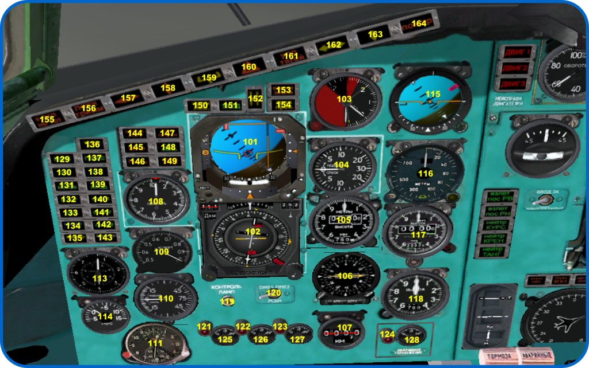
Рис. . Панель капитана.
101 - ПКП
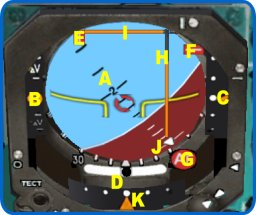
Рис. . ПКП.
A - Авиагоризонт
B - Шкала отклонения скорости. Перемещение круглого индекса вверх означает, что скорость выше, чем заданная скорость автотяги
C - Индекс глиссады. Дублирует планку положения глиссады прибора ПНП
D - Шарик индикатора скольжения
Е - Бланкер отказа канала крена
F - Бланкер отказа канала глиссады
G - Бланкер отказа гировертикали
H - Директорная стрелка курса
I - Директорная стрелка глиссады
J - Индекс крена
K - Индекс курса. Дублирует планку отклонения курса прибора ПНП
102 - ПНП
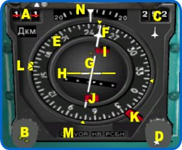
Рис. . ПНП.
A - Шкала дальности. В Ту-154 не используется
B - Кремальера заданного курса
C - Шкала заданного путевого угла (ЗПУ)
D - Кремальера ЗПУ
Е - Подвижная шкала компаса. Может показывать либо гиромагнитный, либо гироскопический курс, в зависимости от положения переключателя на оверхеде
F - Стрелка ЗПУ
G - Планка отклонения курса. Показывает отклонение самолета от ЛЗП в различных режимах работы АБСУ (ILS, VOR, НВУ)
H - Планка отклонения глиссады
I - Бланкер отказа глиссады
J - Бланкер отказа курса
К - Бланкер отказа курсовой системы
L - Подвижный индекс заданного курса (ЗК)
M - Индикатор режима (СП-VOR-НВУ)
N - Шкала сноса. Подвижный теругольный индекс показывает угол сноса, измеренный аппаратурой ДИСС
103 - Индикатор перегрузки и угла атаки УАП-12 аппаратуры АУАСП
104 - Вариометр ВАР-30
105 - Барометрический высотомер. Снизу - мышиная зона ввода давления в систему СВС
106 - Индикатор курсовых углов ИКУ. Подвижная шкала всегда показывает гиромагнитный курс, стрелки показывают МПР от радиокомпасов либо радиалы VOR от систем Курс-МП, в зависимости от переключателей в нижней части прибора
107 - Индикатор дальности DME/РСБН
108 - Указатель воздушной скорости с индексом заданной скорости системы автотяги
109 - Указатель числа М
110 - Вариометр ВАР-75
111 - Часы АЧС-2. Управление дополнительными шкалами не реализовано
113 - Комбинированный указатель скорости КУС
114 - Термометр наружного воздуха
115 - Резервный авиагоризонт АГР
116 - Радиовысотомер РВ-5М. В нижней части прибора имеется мышиная зона для ввода высоты срабатывания индикатора "H" и звукового сигнала
117 - Футомер УВИД. Прибор не связан с СВС и для ввода давления имеет собственную мышиную зону
118 - Высотомер ВМ-15, работает от СВС
119 - Кнопка контроля исправности ламп
120 - Переключатель дальномера DME1-РСБН-DME2. На реальном самолете на индикатор ИДР дальность от системы РСБН не выводится, в модели (в этой и в ПТ) это сделано из-за плохой читаемости шкалы дальности прибора ППДА-Ш
121-123 - Лампы падения давления гидросистем 1-3
124 - Лампа падения давления в гидроаккумуляторе аварийного торможения
125-127 - Манометры гидросистем 1-3
128 - Манометр гидроаккумулятора аварийного торможения
129 - Табло "Курс". АБСУ стабилизирует посадочный курс по сигналу ILS
130 - Табло "ЗК". АБСУ стабилизирует курс, введенный кремальерой ЗК на ПНП
131 - Табло "Стаб боков". АБСУ стабилизирует крен от задатчика
132 - Табло "НВУ". АБСУ стабилизирует курс по сигналам вычислителя НВУ
133 - Табло "VOR". АБСУ стабилизирует курс по сигналам VOR
134 - Табло "Маркер I". Мигает при пролете маркерного радиомаяка ДПРМ
135 - Табло "Маркер II". Мигает при пролете маркерного радиомаяка БПРМ
136 - Табло "Контр АГ". Отказ системы контроля гировертикалей.
137 - Табло "Глисс". АБСУ стабилизирует глиссаду по сигналу ILS
138 - Табло "АТ". Работает автотяга
139 - Табло "Стаб прод". АБСУ стабилизирует угол тангажа от задатчика
140 - Табло "Стаб H". АБСУ стабилизирует высоту изменением угла тангажа
141 - Табло "Стаб V". АБСУ стабилизирует воздушную скорость изменением угла тангажа
142 - Табло "Стаб M". АБСУ стабилизирует число М изменением угла тангажа
143 - Табло "Маркер III". Мигает при пролете входного радиомаяка (inner).
144 - Табло "Остаток 2500". Остаток топлива 2500 кг
145 - Табло "a кр". Предельный угол атаки
146 - Табло "n y". Предельная перегрузка
147, 148 - Табло "ССО опасн", "ССО связь". Используются для сигнализации об опасности захвата самолета или нападения на экипаж. В модели не задействованы
149 - Табло "Пред скор". Превышена предельная скорость
150 - Табло "Крен лев". Предельный левый крен
151 - Табло "Уход". АБСУ работает в режиме автоматического ухода на второй круг
152 - Табло "H". Достигнута высота, установленная задатчиком радиовысотомера
153 - Табло "Опасно земля". Опасная скорость сближения с землей
154 - Табло "Крен прав". Предельный правый крен
155 - Табло "К взлету не готов". Мигает, если не выполнены обязательные процедуры перед взлетом
156 - Табло "Ложн тримм". Ложное триммирование. Загорается при попытке вручную управлять МЭТ при включенном автоматическом режиме работы АБСУ, либо отказах в цепи управления МЭТ. В модели реализован только первый случай
157 - Табло "Управляй креном". Отказ бокового канала стабилизации АБСУ. В модели не реализован
158 - Табло "Управляй тангажом". Отказ продольного канала стабилизации АБСУ. В модели не реализован
159 - Табло "Отказ уход". Отказ вычислителя ухода АБСУ, при уходе на второй круг в автоматическом режиме. В модели не реализован
160 - Табло "Отказ". Интегральный сигнал отказа. Мигает в случае отказа систем
161 - Табло "Управляй тягой". Отказ автотяги. В модели не реализован
162 - Табло "Предел курса". Предельное отклонение от курса при автоматическом заходе на посадку.
163 - Табло "Предел глиссады". Предельное отклонение от глиссады при автоматическом заходе на посадку.
164 - Табло "Пожар". В модели не реализован
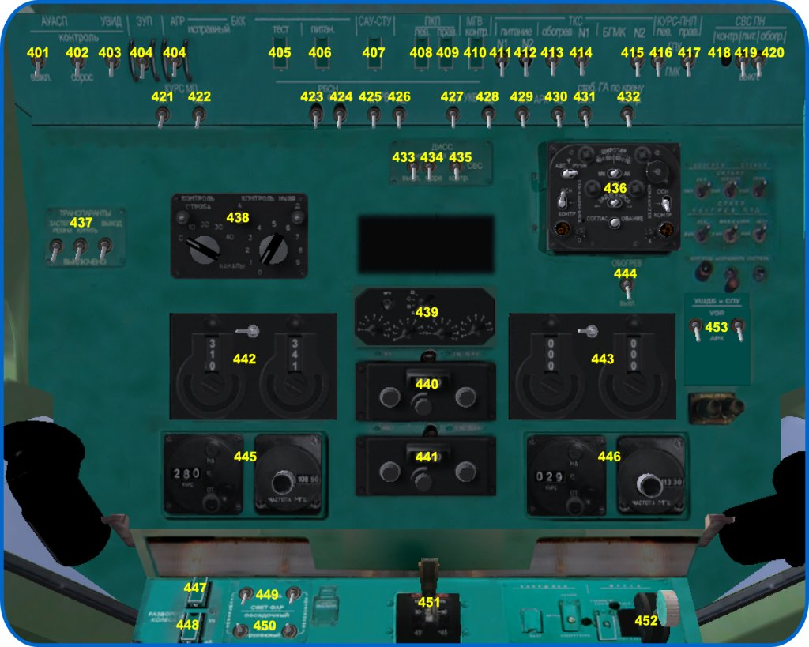
Рис. . Оверхед.
401 - Выключатель аппаратуры АУАСП
402 - Выключатель "контроль АУАСП". В модели не задействован
403 - Выключатель футомера УВИД
404 - Выключатель резервного авиагоризонта АГР
405 - Выключатель "Тест БКК". Сбрасывает сигнал ошибки блока контроля крена (БКК)
406 - Выключатель питания БКК
407 - Выключатель питания АБСУ
408, 409 - Выключатели питания гировертикалей ПКП 1 и 2 пилотов
410 - Выключатель питания контрольной гировертикали
411, 412 - Выключатели питания гироскопов ТКС
413 - Выключатель обогрева ТКС. В модели не задействован
414, 415 - Выключатели питания блоков гиромагнитного курса БГМК
416, 417 - Переключатели ПНП - гиромагнитный или гироскопический курс, 1 и 2 пилотов
418, 420 - Контроль и обогрев системы воздушных сигналов СВС. В модели не задействованы
419 - Выключатель питания СВС
421, 422 - Выключатели питания навигационных приемников Курс-МП
423- Выключатель питания приемника РСБН
424- Выключатель режима "Опознавание" РСБН. Поскольку этот режим вряд ли когда будет реализован в симе, в модели этот выключатель переключает РСБН для работы с маяками VOR
425, 426 - Выключатели питания радиовысотомеров РВ-5М. В модели работает только высотомер капитана
427, 428 - Выключатели питания связных радиостанций.
429, 430 - Выключатели питания радиокомпасов
431, 432 - Выключатели стабилизаторов по крену гироскопов ТКС. Поскольку в симуляторе нет возможности контролировать погрешности гироскопа, данные выключатели не задействованы. Возможно, когда-нибудь погрешности гироскопов будут реализованы...
433 - Выключатель питания допплеровского измерителя скорости сноса ДИСС
434 - Переключатель "суша-море" аппаратуры ДИСС
435 - Переключатель "ДИСС-СВС-контр" аппаратуры ДИСС
436 - Пульт ПУ-11 системы ТКС
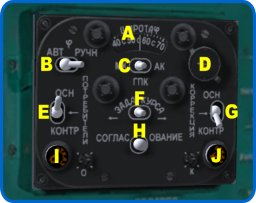
Рис. . Пульт Пу-11 системы ТКС.
A - Шкала ввода широты
B - Выключатель широтной коррекции. На реальном самолете, автоматическая широтная коррекция ТКС не реализована. Однако, в модели есть возможность включить этот режим. С точки зрения реализма, пользоваться автоматической широтной коррекцией не рекомендуется
C - Переключатель режима коррекции ТКС. Режим АК (астрокоррекции) на реальных самолетах и в модели не используется
D - Ручка ввода широты
Е - Переключатель потребителей. Подает на выход ТКС сигнал с основного либо резервного гироагрегата
F - Ручной задатчик курса
G - Переключатель коррекции основного либо резервного гироагрегата ТКС
H - Кнопка быстрого согласования
I, J - Лампы отказов основного и резервного гироагрегатов
437 - Выключатели табло в пассажирских салонах "Выход", "Не курить", "Застегнуть ремни". Не представляю, куда это можно завести в модели. Не задействованы
438 - Пульт управления приемником РСБН. В штатном режиме, левая ручка вводит десятки, правая - единицы номера канала РСБН. Если РСБН работает в режиме совместимости с маяками VOR, левая ручка вводит мегагерцы, правая - килогерцы. В этом режиме, для контроля частоты, появляется строка подсказки. Режим "РСБН-VOR" возможен только в модели, с точки зрения реалистичности использовать этот режим не рекомендуется
439 - Пульт управления ответчиком. Пока не задействован.
440, 441 - Пульты управления связными радиостанциями. Есть мышиные зоны для устаноки частоты
442, 443 - Пульты управления приемниками радиокомпасов. Переключатель на пульте выбирает частоты "select-standby", над выбранной загорается зеленая лампа
444 - Выключатель обогрева ПВД. Насколько я знаю, в симе эффекты обледенения ПВД не моделируются
445, 446 - Пульты управления навигационными приемниками Курс-МП. В левой половине пульта вводится радиал VOR, в правой - частота. Для ввода служат мышиные зоны сверху и снизу цифр
447 - Выключатель разворота колеса
448 - Переключатель угла разворота колеса 63-10
449 - Сдвоенный выключатель выпуска-уборки фар
450 - Сдвоенный переключатель посадочный-рулежный свет фар
451 - Рычаг управления закрылками
452 - Рычаг управления шасси
453 - Переключатель режимов АРК-VOR индикатора УШДБ
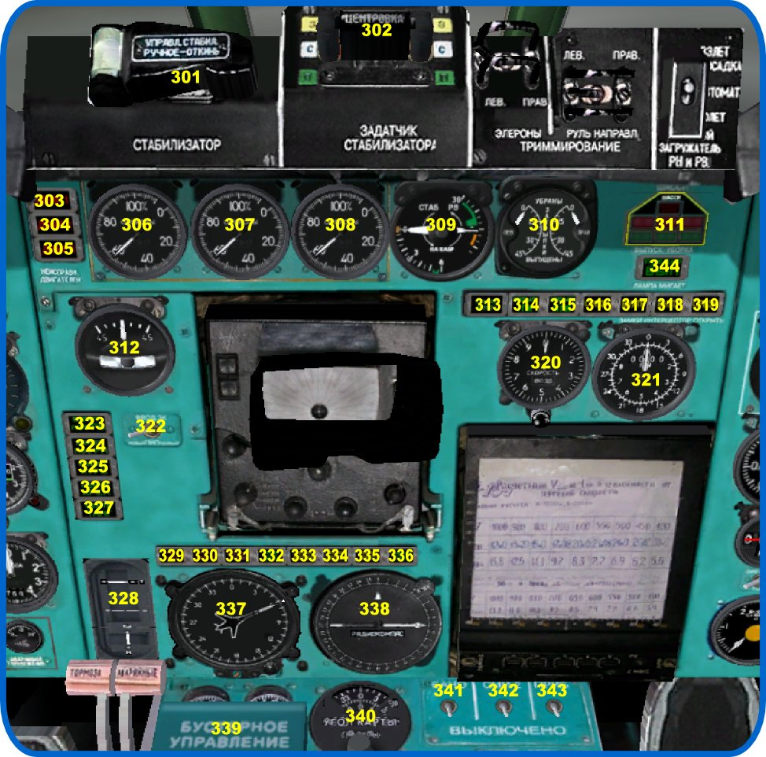
Рис. . Центральная панель.
301 - Ручное управление перестановкой стабилизатора. Для управления нужно откинуть колпак, под колпаком находится переключатель
302 - Задатчик стабилизатора
303-305 - Табло отказа двигателей
306-308 - Указатели оборотов КВД двигателей
309 - Указатель положения РВ и стабилизатора. В центре прибора есть мышиная зона вызова подсказки текущей массы, центровки, Vr и Vref. Значения скоростей вычисляются для текущей конфигурации
310 - Указатель положения закрылков
311 - Табло шасси
312 - Указатель поворота ЭУП
313 - Табло "Стаб включ". Показывает работу электропривода переставного стабилизатора
314, 315 - Табло "Закр I ПК", "Закр II ПК". Горят при исправной работе двух полукомплектов привода закрылок. В модели всегда включаются вместе
316, 319 - Табло выпуска интерцепторов "Внешн"
317, 318 - Табло выпуска интерцепторов "Внутр"
320 - Указатель скорости воздушной-путевой УСВПК. В режиме "возд" показывает воздушную скорость от системы СВС, в режиме "пут" - путевую от аппаратуры ДИСС. Внизу прибора есть мышиная зона для перключения режима
321 - Прямопоказывающий прибор дальности-азимута ППДА-Ш аппаратуры РСБН
322 - Переключатель источника ЗК (лев-прав ПНП)
323, 324 - Табло полетных загружателей. В модели оба табло всегда управляются совместно, сама система загружателей не реализована
325-327 - Табло нейтрального положения триммеров. На табло есть мышиные зоны для сброса триммеров в нейтраль
328 - Индикатор положения агрегатов РА-56. По этому прибору можно судить о работе АБСУ, прибор показывает выходные усилия агрегатов РА-56, приложенные к проводке управления, т.е. управляющие воздействия автопилота
329 - Табло "Отказ НВУ". Загорается при возникновении отказа системы НВУ. Отказы не реализованы
330 - Табло "Отказ МГВК". Загорается при отказе контрольной гировертикали
331 - Табло "НВУ-VOR автом". Загорается при отказе навигационного вычислителя АБСУ, отвечающего за работу систем VOR и НВУ, либо при пропадании сигнала VOR. Отказ не реализован
332 - Табло "Корр вкл". Загорается при включении режима коррекции НВУ по сигналам РСБН
333, 334 - Табло "Дальн автон", "Азимут автон". Загорается при пропадании сигнала дальности или азимута системы РСБН
335 - Табло "Память ДИСС". Загорается при отказе системы ДИСС
336 - Табло "Смена ЧО". Загорается за 2 км до ППМ
337 - Указатель штурмана УШ. Стрелка в виде силуэта самолета показывает положение основного гироагрегата системы ТКС, подвижный треугольный индекс - положение резервного гироагрегата. Отклоняемая стрелка ПУ показывает угол сноса, измеренный аппаратурой ДИСС
338 - Указатель УШДБ. В режиме АРК стрелка показывает курсовой угол радиостанции, в режиме VOR обратный конец стрелки показывает текущий радиал. Выбор режима производится переключателями на оверхеде
339 - Крышка выключателей бустерного управления. Перед взлетом бустера должны быть включены,крышка закрыта
340 - Пульт ввода угла карты системы НВУ. Для управления есть мышиные зоны справа и слева двух подвижных шкал. Верхняя шкала вводит десятки градусов, нижняя - единицы
341 - Выключатель бортовых навигационных огней
342 - Выключатель проблесковых маячков
343 - Выключатель освещения приборных досок. Освещение включается по всей кабине, в т.ч. на панели бортинженера
344 - Табло "предкрылки выпускаются". В модели управление предкрылками только совмещенное с закрылками, отдельное управление не реализовано
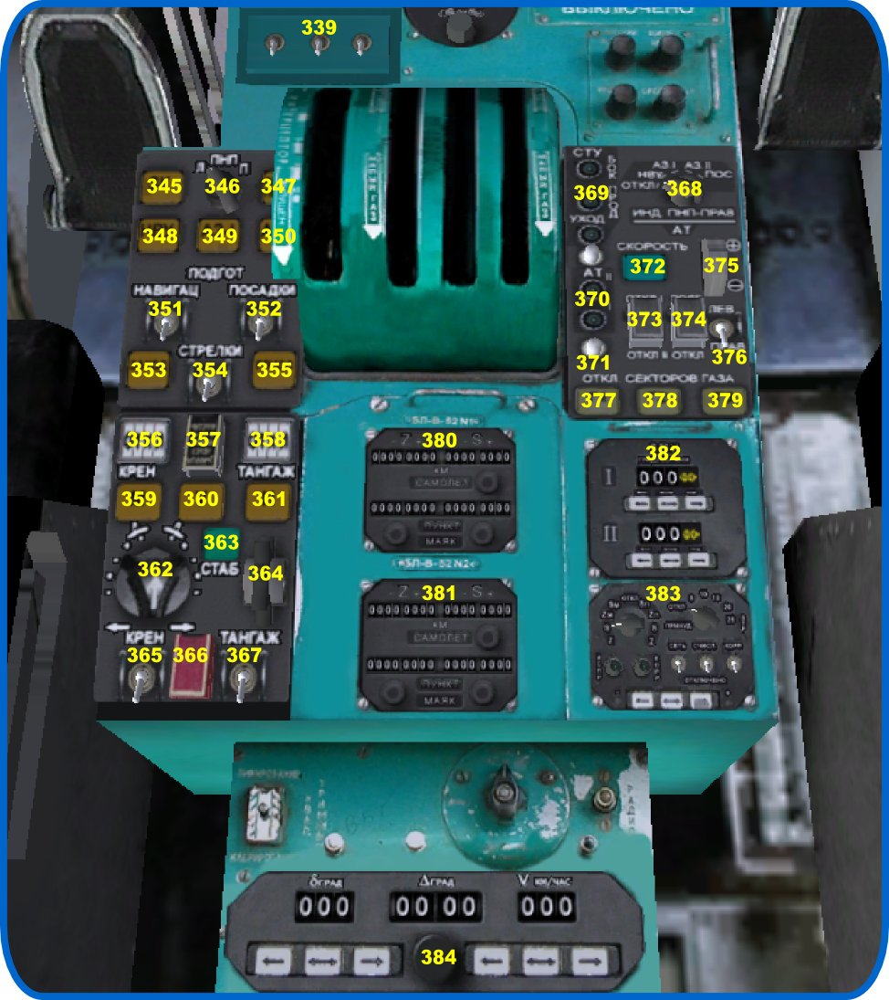
Рис. . Консоль.
345 - Кнопка-лампа "ЗК". Включает режим управления курсом самолета от кремальеры "ЗК"
346 - Переключатель "ПНП л-п". При полете по сигналам VOR, переключает источник ЗПУ, подаваемого в автопилот
347 - Кнопка-лампа "Сброс прогр". Сбрасывает ранее выбранный режим канала крена АБСУ, перключает канал крена в "стаб бок"
348 - Кнопка-лампа "НВУ". Включает режим управления курсом самолета от системы НВУ
349, 350 - Кнопки-лампы "АЗ-I", "АЗ-II". Включает режим управления курсом самолета в режиме VOR от первого или второго комплекта Курс-МП
351 - Выключатель навигационного вычислителя
352 - Выключатель вычислителя посадки
353 - Кнопка-лампа "Заход". Включает канал крена АБСУ в режим автоматического захода на посадку по сигналам Курс-МП
354 - Выключатель директорных стрелок ПКП
355 - Кнопка-лампа "Глисс". Включает канал тангажа АБСУ в режим автоматического захода на посадку по сигналам Курс-МП
356 - Табло режимов канала крена АБСУ
357 - Кнопки согласования гировертикалей
358 - Табло режимов канала тангажа АБСУ
359 - Кнопка-лампа "М". Включает режим стабилизации числа М изменением угла тангажа
360 - Кнопка-лампа "V". Включает режим стабилизации воздушной скорости изменением угла тангажа
361 - Кнопка-лампа "H". Включает режим стабилизации высоты
362 - Задатчик крена
363 - Кнопка-лампа "Стаб". Включение автопилота в режим стабилизации
364 - Задатчик тангажа
365 - Выключатель канала крена АБСУ
366 - Тумблер "включить в болтанку". Загрубляет коэффициенты автопилота, самолет более устойчив при полете в болтанку, но точность стабилизации параметров уменьшается
367 - Выключатель канала тангажа АБСУ
368 - Переключатель режимов индикации ПНП 2-го пилота
369 - Лампы готовности вычислителя посадки "бок", "прод", "уход"
370 - Лампы готовности автотяги
371 - Кнопки контроля системы автотяги. В модели система контроля не реализована
372 - Кнопка-лампа включения режима стабилизации скорости системой автотяги
373 - Выключатель питания автотяги
374 - Выключатель "готовность" автотяги
375 - Колесо установки скорости стабилизации системы автотяги. При вращении колеса появляется строка подсказки
376 - Переключатель (л-п) указателя скорости, на который выводится индекс автотяги. В модели всегда активен индекс указателя скорости на панели капитана
377-379 - Кнопки-лампы отключения секторов газа от управления автотягой. Лампа горит - сектор отключен. При отключении второго сектора режим "стаб" автотяги отключается. В модели, отключенные сектора возвращаются на управление от джойстика, это нужно иметь в виду и заблаговременно ставить throttle в требуемое положение перед отключением автотяги
380, 381 - Пульты В-52 НВУ
382 - Пульт В-140 НВУ
383 - Пульт В-51 НВУ
384 - Пульт ветра В-57
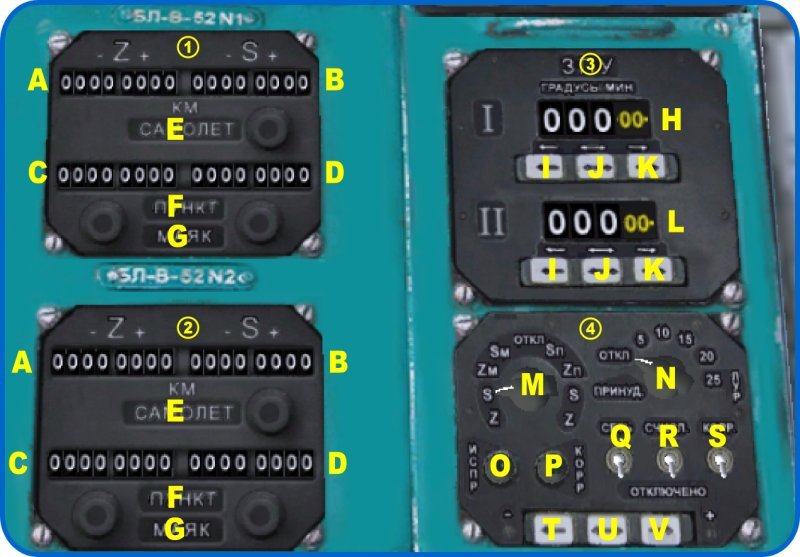
Рис. . Пульты НВУ.
A - Боковое отклонение самолета от ЛЗП (Z)
B - Расстояние до текущего ППМ (S)
C - Боковое отклонение заданного ППМ (Z), пункт-маяк
D - Расстояние до следующего ППМ (S), пункт-маяк
Е - Табло "самолет"
F - Табло "пункт"
G - Табло "маяк"
H - ЗПУ-1
I - Кнопка ввода ЗПУ (+)
I - Кнопка смены шага вводимого угла
K - Кнопка ввода ЗПУ (-)
L - ЗПУ-2
M - Переключатель ввода расстояний
N - Переключатель выбора ЛУР
O - Лампа исправности НВУ
P - Лампа коррекции НВУ
Q - Выключатель питания НВУ
R - Выключатель счисления
S - Выключатель коррекции
T - Кнопка ввода растояний (+)
U - Кнопка смены шага расстояния
V - Кнопка ввода расстояний (-)
Цена младшего разряда счетчиков расстояния НВУ на реальном самолете составляет километр, таким образом, максимально возможная длинна частной ортодромии - 9999 км. В модели, предусмотрена возможность масштабировать счетчики расстояния в десять раз, уменьшая максимальную длинну участка, и переводя младший разряд счетчика расстояния в режим счета сотен метров. При этом, все остальные параметры НВУ не меняются, а просто изменяется масштаб отображения расстояния. Для переключения масштаба служит мышиная зона на пульте В-51 (383), левый верхний винтик.
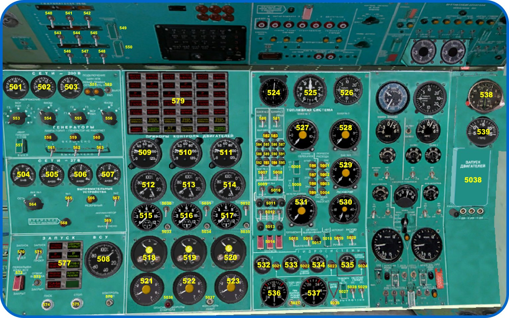
Рис. . Панель бортинженера.
501 - Указатель частоты сети переменного тока 200 В 400 Гц
502 - Вольтметр сети переменного тока
503 - Амперметр сети переменного тока
504 - Вольтметр сети постоянного тока 27 В
505-507 - Амперметры сетей постоянного тока
508 - Тахометр ВСУ
509-511 - Указатели положения РУД
512-514 - Двухстрелочные указатели оборотов турбины
515-517 - Указатели температуры газов
518-519 - Комбинированные указатели давления топлива, масла, температуры масла
521-523 - Указатели мгновенного расхода топлива
524 - Комбинированный указател скорости КУС
525 - Барометрический высотомер
526 - Вариометр
527 - Двухстрелочный топливомер крыльевых баков N 2
528 - Двухстрелочный топливомер крыльевых баков N 3
529 - Топливомер балластного бака N 4
530 - Расходомер
531 - Топливомер расходного бака N 1 и указатель суммарного запаса топлива
532-534 - Манометры гидросистем 1,2,3
535 - Манометр гидроаккумулятора аварийного торможения
536,537 - Указатели уровня гидрожидкости
538 - Часы АЧС-2. Управление дополнительными шкалами не смоделировано
539 - Термометр наружного воздуха
540-542 - Выключатели гидропитания агрегатов РА-56 канала курса
543-545 - Выключатели гидропитания агрегатов РА-56 канала крена
546-548 - Выключатели гидропитания агрегатов РА-56 канала тангажа
549 - Выключатель кольцевания. В модели не задействован
550 - Выключатель продольной управляемости
551 - Лампы питания шин ПНК. Горящие лампы сигнализируют отказ питания 27 В пилотажно-навигационного комплекса
552 - Переключатель источника переменного тока ВСУ-РАП
553 - Галетный переключатель указателей частоты-напряжения (генераторы, сети, ВСУ_РАП)
554 - Галетный переключатель контроля фазы переменного напряжения
555 - Галетный переключатель указателей тока (генераторы, ВСУ_РАП)
556 - Галетный переключатель контроля фазы переменного тока
557 - Выключатель аварийного преобразователя. Не задействован
558-560 - Лампы отказа генераторов. Лампа горит - генератор не работает
561-563 - Выключатели генераторов
564 - Галетный переключатель контроля сетей постоянног тока
565, 567 - Выключатели выпрямителей. Подают питание 27 В на ПНК и зарядку аккумуляторов
566 - Лампа резервного выпрямителя. Не задействована в модели
568 - Лампа "Сеть от аккумуляторов"
569 - Выключатель аккумуляторных батарей
570 - Главный выключатель автоматики ВСУ
571 - Переключатель "Запуск-холодная прокрутка" ВСУ
572 - Выключатель топливного насоса ВСУ
573 - Кран отбора воздуха от ВСУ
574 - Кнопка запуска ВСУ
575 - Кнопка останова ВСУ
576 - Кнопка контроля ламп панели ВСУ
577 - Панель сигнализации ВСУ
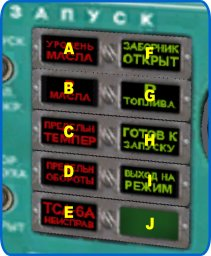
Рис. . Панель сигнализации ВСУ.
A - Уровень масла. Не задействован
B - Давление масла ниже нормы
C - Предельная температура. Не задействован
D - Предельные обороты. Не задействован
E - ТСА-6А неисправна. Не задействован
F - Заборник открыт. Открыт воздухозаборник ВСУ
G - Давление топлива в норме
I - Выход на режим. ВСУ работает
J - работает пусковая автоматика ВСУ
579 - Панель сигнализации двигателей
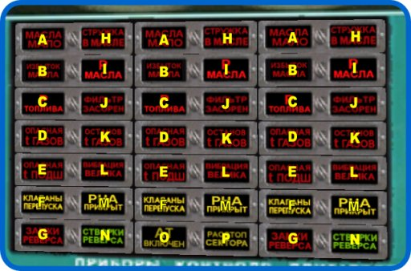
Рис. . Панель сигнализации двигателей.
A - Масла мало. Не задействован
B - Избыток масла. Не задействован
C - Давление топлива ниже нормы
D - Опасная t газов. Не задействован
E - Опасная t подшипников. Не задействован
F - Клапаны перепуска. Горит на малых оборотах
G - Замки реверса. Сигнализирует открытие замков реверса
H - Стружка в масле. Не задействован
I - Давление масла ниже нормы
J - Фильтр засорен. Не задействован
K - Останов t газов. Не задействован
L - Вибрация велика. Не задействован
M - РНА прикрыт. Горит на малых оборотах
N - Створки реверса переложены
O - АТ включен. Работает автотяга
P - Расстопори сектора. Попытка включить автотягу при застопоренных секторах газа. Не задействован
580 - Выключатель топливных насосов бака 2 лев
581 - Выключатель топливных насосов бака 2 прав
582 - Лампа выравнивания бака 2 лев
583 - Лампа выравнивания бака 2 прав
584,588,592 - Лампы топливных насосов бака 3 лев
585,589 - Лампы топливных насосов бака 2 лев
586,590 - Лампы топливных насосов бака 2 прав
587,591,595 - Лампы топливных насосов бака 3 прав
593 - Лампа выравнивания бака 3 лев
594 - Лампа выравнивания бака 3 прав
596, 597 - Лампы кранов перекачки "из 3 в 2"
598, 599 - Лампы кранов перекачки "из 4 в 2"
5001 - Лампа автомата расхода - режим "баки 2"
5002 - Лампа автомата расхода - режим "баки 3"
5003 - Лампа автомата расхода - режим "бак 4"
5004 - Лампа "автомат расхода не работает"
5005 - Управление кранами перекачки "из 3 в 2"
5006 - Управление кранами перекачки "из 4 в 2"
5007 - Выключатель топливных насосов бака 3 лев
5008 - Выключатель топливных насосов бака 3 прав
5009 - Выключатель топливных насосов бака 4
5010 - Лампы топливных насосов бака 4 (балластного)
5011 - Лампы топливных насосов бака 1 (расходного)
5012 - Выключатели топливных насосов бака 1
5013 - Лампы перекрывных кранов
5014 - Выключатели перекрывных кранов
5015 - Выключатель топливомеров
5016 - Выключатель автомата выравнивания
5017 - Контрольная лампа автомата выравнивания
5018 - Выключатель автомата расхода топлива
5019 - Переключатель режимов автомата расхода топлива "автомат-ручное"
5020 - Выключатель расходомера
5021-5023 - Контрольные лампы падения давления в гидросистемах
5024 - Контрольная лампа падения давления в гидроаккумуляторе аварийного торможения
5025 - Кнопки контроля уровня гидрожидкости в баках. Не задействованы в модели
5026 - Кнопка зарядки гидроаккумулятора аварийного торможения
5027 - Кран подключения второй гидросистемы на первую
5028, 5029 - Выключатели насосных станций
5030-5032 - Выключатели термометров газов
5033-5035 - Кнопки контроля термометров газов
5036 - Лампа "Опасные обороты стартера"
5037 - Кнопка контроля ламп моторной панели
5038 - Панель запуска двигателей
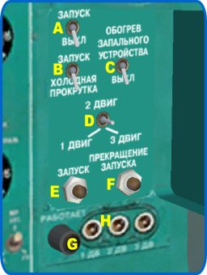
Рис. . Панель запуска двигателей.
A - Выключатель пусковой автоматики
B - Переключатель "запуск-холодная прокрутка". Режим холодной прокрутки реализован, но не очень реалистично, и с странным глюком. Возможно, в будущем этот режим будет смоделирован более правильно. Сейчас я не рекомендую его использовать
C - Обогрев запального устройства. Не задействован в этой версии
D - Трехпозиционный переключатель выбора запускаемого двигателя
E - Кнопка запуска выбранного двигателя
F - Кнопка прекращения запуска
G - Лампа "ПДА работает". Горит в процессе запуска двигателя
H - Три кнопки "запуск в воздухе". В даной версии не задействованы
В этом разделе описаны приборы и системы пилотажно-навигационного комплекса.
На самолете установлено два авиагоризонта ПКП (101). Каждый прибор получает информацию о крене и тангаже от собственной гировертикали. Для контроля исправности используется третья контрольная гировертикаль. Блок контроля крена (БКК) обеспечивает достоверность крена\тангажа, а также работу световой и бланкерной сигнализации.
На реальном самолете, сигнал крена\тангажа, кроме ПКП, поступает в автопилот. На модели автопилот работает от собственных датчиков, это сделано с целью упрощения отладки.
ПКП является сложным комбинированным прибором, кроме непосредственнно индикации углов тангажа и крена, на прибор выведена информация о сносе, отклонении от линии глиссады по высоте и курсу, а также отклонении скорости от заданной. Прибор имеет две директорные стрелки, управляемые от сигналов СТУ, и всю необходимую бланкерную сигнализацию.
Авиагоризонты включаются тремя АЗС на оверхеде 408, 409, 410 (левый, правый и контрольный). Для начальной выставки гироскопов используются две кнопки под колпаком (357) на пульте ПН-5. После выставки гироскопов, необходимо сбросить сигнализацию БКК переключением АЗС "тест" (405)
Кроме авиагоризонтов ПКП, на самолете установлен резервный авиагоризонт АГР (115). Он полностью автономен и работает от сети постоянного тока. Включается АЗС 404 на оверхеде.
На левой панели установлены:
Высотомер УВО-15 (105). Снизу имеет мышиную зону для ввода давления в СВС, давление (в мм рт. ст.) отображается на дополнительной цифровой шкале
Футомер УВИД-15 (117). Прибор не связан с СВС, имеет собственную мышиную зону для установки давления (в дюймах рт.ст.) и шкалу давления. Прибор требует электропитания, и включается АЗС 403 на оверхеде.
Высотомер ВМ-15 (118). Дублирует УВО-15, работает от СВС, ввода давления не имеет.
Радиовысотомер РВ-5М (116). Имеет мышиную зону для ввода высоты срабатывания сигнализации, желтую лампу высоты на самом индикаторе и дополнительное табло "H". Показания прибора зависят от крена и тангажа. Включается АЗС 425, 426 (левый и правый). В модели, прибор второго пилота полностью дублирует показания первого. От установки высоты РВ-5М зависит озвучка при заходе на посадку.
Вариометр ВАР-30 (104). Работает автономно.
Вариометр ВАР-75 (110). Предназначен для контроля скорости аварийного снижения.
В модели, приборы на панели второго пилота дублируют показания приборов капитана, за исключением ПНП, который управляется отдельным переключателем, и позволяет при полете по VOR управлять ПНК так, как это изложено в РЛЭ реального самолета.
Указатель воздушной скорости УС (108), в модели работает полностью автономно, независимо от электропитания. Прибор оборудован подвижным индексом, который показывает установленную скорость для автотяги. Если автотяга работает в режиме согласования, индекс следует за стрелкой скорости.
Комбинированный указатель скорости КУС (113) показывает приборную и истинную скорости, широкая и тонкая стрелки соответственно. В модели, я не стал самостоятельно пересчитывать скорости по поправочным таблицам. Вместо этого, я воспользовался готовыми переменными FDM JSBsim velocities/ve-kts и velocities/vt-fps соответственно, с учетом единиц измерения. Как я понял, это именно то, что должен показывать КУС. Замечания приветствуются - возможно, тут я и не прав...
Указатель 109 показывает число Маха.
Указатель скорости воздушной путевой УСВП-К (320) расположен на правой стороне центральной панели, ближе к второму пилоту. В зависимости от положения ручки в нижней части, прибор показывает воздушную скорость от СВС или путевую, относительно земли, от аппаратуры ДИСС.
Допплеровский измеритель скорости и сноса ДИСС предназначен для измерения скорости относительно земли, в двух перпендикулярных плоскостях. По данным ДИСС, производится счисление пройденного пути в навигационном вычислителе НВУ, а также определение угла сноса и подача его в АБСУ для коррекции направления, и на ПНП.
ДИСС в FG смоделирован довольно упрощенно, в частности не моделируется ухудшение точности работы системы при полетах над водной поверхностью. Отказ ДИСС на скоростях ниже 180 км\ч смоделирован дополнительно, также как сигнализация и контроль.
ДИСС включается тремя АЗС на оверхеде - питание, суша-море, дисс-свс-контроль (433, 434, 435 соответственно). Все три тумблера нужно поставить в верхнее положение.
Самолет оборудован двумя комплектами навигационых приемников Курс-МП. Курс-МП работает с системами VOR и ILS. В модели, этот приемник также работает с DME, хотя симулятор позволяет разнести VOR и DME, для большей реалистичности.
Автоматический заход на посадку по сигналам ILS возможен только с первого комплекта, полет по VOR - с обоих.
Курс-МП включается с помощью АЗС 421, 422. Выбор частоты и ввод радиала производится с пультов 445, 446. Предусмотрены мышиные зоны выше и ниже барабанчиков с цифрами. Там же, на пультах, находятся индикаторы "НА" и "ОТ". Индикаторы работают, сигнализируя захват маяка, даже в случае, когда система настроена на ILS. Это, конечно, некоторое отступление от реалистичности, но я посчитал что в модели это можно оставить. Кроме того, от подачи питания на Курс-МП зависит работоспособность маркерного приемника.
Информация с приемников Курс-МП подается на:
Планки положения ПНП в режимах VOR и ILS
Индикатор ИКУ (RMI), (106), если переключатели внизу прибора стоят в положении VOR.
Индикатор УШДБ (338), если переключатели на оверхеде стоят в положении VOR. В этом случае, обратный конец стрелки показывает радиал, на котором находится самолет
АБСУ, для автоматического полета по сигналам VOR или ILS
На самолете установлены два радиокомпаса, их пульты расположены на оверхеде, 442 и 443. На каждом пульте можно установить две частоты (есть мышиные зоны слева и справа от цифр), рабочая частота выбирается тумблером, и обозначается зеленой лампой.
Информация с радиокомпасов подается на:
Индикатор ИКУ (RMI), (106), если переключатели внизу прибора стоят в положении АРК.
Индикатор УШДБ (338), если переключатели на оверхеде стоят в положении АРК. В этом случае, стрелка показывает курсовой угол радиостанции.
Радиокомпаса включаются АЗС 429, 430.
Пульт управления приемником системы РСБН находится на оверхеде, поз. 438. Левая ручка устанавливает "десятки" номера канала, правая - "единицы". Включение питания производится АЗС 437.
Навигационная информация системы РСБН подается на прибор ППДА-Ш (321), и отдельно канал дальности дублируется на ИДА (107). Основной потребитель информации РСБН - это НВУ, которое производит по этой информации коррекцию. Подробнее см. описание НВУ.
В модели, для работы РСБН, необходимо внести информацию о маяках системы в базу навигационных средств симулятора, в файл Navaids/nav.dat.gz. Для этого, вместе с моделью идет файл rsbn.dat. Поддержка РСБН сделана по аналогии с известным сценарием Прядко-Грицевского для MSFS, станции РСБН в FG - это VOR с несколько измененным способом установки частоты. Для установки РСБН на юниксах:
Скопируйте Navaids/nav.dat.gz в архив, на всякий случай.
Разархивируйте Navaids/nav.dat.gz в свою домашнюю директорию.
Откройте получившийся nav.dat в вашем любимом текстовом редакторе, и удалите в самом конце файла строчку "99".
Допишите rsbn.dat в конец nav.dat, например так: cat rsbn.dat >> nav.dat
Заархивируйте получившийся nav.dat в nav.dat.gz
Скопируйте доработанный файл в Navaids/nav.dat.gz. Тут вам понадобятся рутовые права.
Для windows все примерно так же, только нужен архиватор, понимающий gz. В принципе, объединять файлы можно в любом текстовом редакторе, т.к. это обычные текстовые файлы.
Система РСБН применяется только в странах ex-USSR, и за рубежом использовать ее невозможно. Чтобы можно было проводить коррекцию НВУ при полетах за границей, в модели РСБН был доработан для приема сигналов маяков VOR. Чтобы перевести РСБН в этот режим, нужно включить тумблер "опознавание" (424).
В этом режиме, установка частоты маяка производится теми же ручками пульта 438, только теперь левая ручка устанавливает мегагерцы, правая - килогерцы. Для контроля введенного значения частоты, внизу экрана появляется подсказка. Данный режим - полностью виртуальный, в реальности РСБН не может работать с маяками VOR. С точки зрения реализма, пользоваться им не рекомендуется.
Автоматизированная бортовая система управления, АБСУ - это автопилот самолета Ту-154. Это довольно сложный комплекс, оказывающий важное влияние на параметры движения самолета. Требуемые характеристики устойчивости и управляемости невозможно получить только средствами аэродинамической компоновки, без помощи системы автоматического управления.
АБСУ получает информацию об пространственном положении самолета от различных гироскопических датчиков, датчиков ускорения, радиосредств и навигационных систем. Не все эти источники смоделированы детально, но по возможности сохранен принцип действия и основные особенности системы в целом.
АБСУ управляет самолетом по курсу, крену и тангажу, в штурвальном, полуавтоматическом или автоматическом режиме. Рассмотрим подробнее исполнительный механизм АБСУ.
Самолет Ту-154 имеет необратимую гидравлическую систему управления. Управляющее усилие от штурвальной колонки и педалей передается с помощью системы тяг к входной качалке гидроусилителя (бустера), а уже выходной шток бустера приводит в движение рулевую поверхность. Для создания усилия на колонке, применяются пружинные загружатели.
Выходные сигналы системы АБСУ подаются на электрически управляемые гидравлические агрегаты РА-56, которые включены через дифференциальные качалки в основную проводку управления. Таким образом, автопилот постоянно подключен параллельно штурвалу и педалям. В автоматическом режиме управления, автопилот воздействует на тяги через исполнительные агрегаты, усилия на штурвал при этом не передаются из-за трения в проводке и усилия пружинных загружателей. В штурвальном режиме, АБСУ воздействует на тяги параллельно с пилотом, обеспечивая в этом случае оптимальный закон управления.
Агрегаты РА-56 имеют тройное резервирование и защиту от заклинения, каждый агрегат питается от трех гидросистем.
АБСУ структурно разделена на продольный канал (тангажа), и боковой канал (крена и курса). Каждый канал може работать полностью независимо от другого. Возможна штурвальное управление в одном канале, и автоматическое - в другом.
АБСУ работает в следующих режимах:
Штурвальное управление. В этом режиме автопилот формирует требуемый закон управления, "помогая" пилоту.
Режим стабилизации боковой, продольной. Автопилот удерживает заданный курс и крен, возможно управление ручками "тангаж" и "разворот".
Режим удержания высоты, приборной скорости или числа М изменением тангажа.
Режим стабилизации заданного курса (режим ЗК)
Режим полета по сигналам маяка VOR (режим АЗ-I, АЗ-II)
Режим полета по сигналам навигационной системы НВУ (режим НВУ)
Режим автоматического захода на посадку по сигналу ILS (режим Заход)
Режим автоматического полета по глиссаде по сигналу ILS (режим Глисс)
Режим автоматического ухода на второй круг (режим Уход)
Режимы автоматического захода на посадку ("Заход", "Глисс") позволяют выполнять автоматический полет по глиссаде, по сигналам ILS, до высоты принятия решения (обычно 60 м). Дальнейшее снижение и посадку необходимо выполнять в штурвальном режиме.
В режимах автоматического захода можно использовать автомат удержания скорости изменением режима двигателей (автотяга). Автомат тяги запрещается использовать в других режимах полета, например в режиме штурвального захода или полета на эшелоне.
Продольный канал АБСУ, в автоматическом режиме, стабилизирует угол тангажа, а также обеспечивает заданую траекторию движения самолета в вертикальной плоскости по датчикам приборной скорости, числа М и барометрической высоты и в режиме автоматического захода - по сигналам глиссадного маяка ILS.
Кроме автоматического режима, продольный канал АБСУ вносит свой вклад в пилотирование самолета в штурвальном режиме. Во всех режимах, продольный канал АБСУ демпфирует самолет по тангажу, обеспечивая необходимые характеристики устойчивости.
Давайте рассмотрим более подробно работу продольного канала АБСУ в штурвальном режиме. Для комфортного пилотирования, самолет должен откликаться на движение штурвальной колонки примерно одинаково, в максимально возможных диапазонах скоростей и центровок. Автопилот, воздействуя на тяги управления, подстраивает эффективность продольного управления и таким образом облегчает пилотирование. Но откуда автопилот получает информацию о ведичине требуемой коррекции? Чтобы ответить на этот вопрос, нужно понять, как триммируется самолет.
Ту-154 не имеет отдельных отклоняемых поверхностей для триммирования. Вместо этого, применяется механизм триммерного эффекта, МЭТ. МЭТ управляется электрическими сигналами и отклоняет штурвальную колонку от центрального положения, таким образом снимая усилия с колонки. Штурвальная колонка оборудована датчиками положения МЭТ, с этих датчиков в автопилот поступает информация о текущем балансировочном положении колонки.
Именно информация о балансировочном положении МЭТ тангажа и является источником данных о требуемой величине коррекции для штурвального режима. Работает это так. Пилот триммирует самолет по тангажу, а АБСУ, в зависимости от балансировочного положения штурвальной колонки, вычисляет требуемый уровень коррекции. Характеристики системы подобраны так, что в широком диапазоне эксплуатационных скоростей и центровок, сохраняется примерно постоянная перегрузка на единицу хода штурвальной колонки.
Правильная работа системы улучшения управляемости продольного канала возможна только в том случае, если самолет стриммирован.
В автоматических режимах продольного канала АБСУ, механизм триммерного эффекта отключается от кнопок на штурвале, и подключается к выходу автопилота через специальный усилитель с пороговой характеристикой. Это позволяет обеспечить непрерывное триммирование самолета в автоматическом режиме и работу системы улучшения управляемости. Когда продольный канал автопилота переключается из автоматического режима в режим штурвального управления, самолет остается стриммирован.
Продольный канал АБСУ включается тумблером 367 на центральной консоли, а система улучшения управляемости - тумблером 550 на панели бортинженера. Режим автоматической стабилизации включается нажатием на кнопку-лампу "СТАБ" (363), при этом лампа загорается, и на панели режимов загорается табло "СТАБ ПРОД" (139). На индикаторе режимов продольного канала АБСУ (358) появляется надпись "СТАБ". АБСУ начинает стабилизировать тот угол тангажа, который был в момент включения режима. Тангаж можно менять с помощью ручного задатчика - колеса 364.
Когда продольный канал АБСУ работает в режиме стабилизации (горит кнопка-лампа (363), надпись "СТАБ" на индикаторе 358), нажатием кнопки-лампы 359, 360, 361 можно выбрать режим автоматической стабилизации числа М, приборной скорости и барометрической высоты соответственно. На панели режимов гаснет "СТАБ ПРОД" и загорается "M"(142), "V"(141), "H"(140). Автоматические режимы переключаются обратно в режим стабилизации тангажа поворотом задатчика 364. Выключение стабилизации продольного канала производится тумблером 367, при этом звучит кратковременный сигнал, на индикаторе 358 появляется символ штурвала и если не был задействован режим стабилизации бокового канала - гаснет лампа 363.
Канал крена и канал курса образуют боковой канал АБСУ. Основное управление производится в канале крена, канал курса обеспечивает демпфирование рысканья (во всех режимах работы АБСУ) и устранение скольжения при выполнении координированного разворота в автоматических режимах работы бокового канала. Выходной агрегат канала крена включен в проводку управления элеронами, канала курса - в проводку руля направления.
И канал крена, и канал курса триммируются с помощью МЭТ, однако в отличие от продольного канала, система улучшения управляемости тут отсутствует. МЭТ крена и курса просто изменяют нейтральное положение штурвала\педалей.
Боковой канал АБСУ стабилизирует крен, позволяет выполнять координированный разворот от задатчика, удерживает заданный курс от ТКС, ведет самолет по сигналам навигационного вычислителя или по сигналам вычислителя посадки.
Боковой канал включается тумблером "КРЕН" (365), и нажатием кнопки-лампы "СТАБ" (363). На панели режимов загорается табло "СТАБ БОКОВ" (131), а на приставке ПН-5 - кнопка-лампа "СБРОС ПРОГР" (347).На индикаторе режимов бокового канала АБСУ (356) появляется надпись "СТАБ". АБСУ начнет стабилизировать крен, причем если в момент включения режима крен был ненулевым, автопилот устранит крен.
В этом режиме можно управлять самолетом ручкой "разворот" (362), при этом разворот будет координированным, т.е. канал курса будет управлять рулем направления, устраняя боковое скольжение.
После включения режима стабилизации крена можно включить режим удержания заданного курса нажатием кнопки-лампы "ЗК" (345). Курс вводится левой кремальерой ПНП (102-B) капитана либо второго пилота, в зависимости от положения переключателя 322.На панели режимов загорается табло 130.
В режиме стабилизации крена можно также выбрать один из режимов навигационного вычислителя: АЗ-I (кнопка-лампа 349),АЗ-II (кнопка-лампа 350),НВУ (кнопка-лампа 348). Первые два - это полет по сигналам маяка VOR, последний - полет по НВУ. Чтобы включились эти режимы, нужно включить навигационный вычислитель тумблером "ПОДГОТОВКА НАВИГАЦИИ" (351) и выполнить настройку соответствующих комплектов Курс-МП или подготовить к работе НВУ. При выборе навигационных режимов, на панели режимов загорается табло 132 или 133.
Для правильного управления АБСУ в режиме полета по маякам VOR, необходимо прочитать соответствующий раздел РЛЭ.
Выключить любой автоматический режим бокового канала можно нажатием кнопки-лампы "СБРОС ПРОГР" (347). Боковой канал АБСУ перейдет в режим "СТАБ БОКОВ", кнопки-лампы погаснут, на панели режимов загорится табло 131. Для перехода в штурвальное управление в боковом канале нужно выключить тумблер "КРЕН" (365), на табло 356 появится символ штурвального управления, и если не включен канал тангажа, то погаснет кнопка-лампа "СТАБ". Отключение бокового канала сопровождается кратким звуковым сигналом.
Важной частью АБСУ являются системы, обеспечивающие движение самолета по заданной траектории - навигационный вычислитель и вычислитель посадки и ухода. Несмотря на современное название, никаких компьютеров на реальном самолете, конечно, нет. Все вычисления выполняются аналоговым способом. Отметим, что одновременно может работать либо навигационный вычислитель, либо вычислитель посадки, поэтому в каждый момент времени включенным может быть либо тумблер 351, либо 352, но не оба вместе. Навигационный вычислитель обеспечивает режимы АЗ-I, АЗ-II, НВУ, а вычислитель посадки - автоматический заход на посадку до ВПР, режимы ЗАХОД и ГЛИСС.
Давайте рассмотрим, как работает АБСУ при выполнении захода на посадку в автоматическом режиме. Для обеспечения посадки в этом режиме, работают следующие системы ПНК:
Навигационный приемник Курс-МП, первый комплект. Приемник должен быть настроен на требуемую частоту ILS (445).
Точная курсовая система ТКС должна быть правильно выставлена, и на ПНП командира, правой кремальерой ЗПУ ("Шпага") должен быть установлен правильный курс посадки(102-D)
На ПН-5 должен быть включен вычислитель посадки тумблером 352.
АБСУ должна находиться в режиме стабилизации крена (вкл. тумблер 365, горит "СТАБ" (363) )
Тумблером 354 можно включить директорные стрелки на ПКП. При автоматическом заходе они в основном служат целям контроля, а вот в директорном по ним можно выполнять пилотирование. Чтобы подготовить директорный заход, нужно выполнить те же операции с АБСУ, что и для автоматического захода, но режим стабилизации не включать (тумблеры 365, 367 должны быть выключены). При этом будет работать система траекторного управления, в этом случае - на директорные стрелки ПКП.
Самолет может быть выведен на посадочный курс либо в штурвальном режиме, либо с помощью задатчика крена, или из режима "ЗК", или любого навигационного режима. Режим автоматического захода можно включить кнопкой-лампой "ЗАХОД" (353, загорится табло 129) либо уже после вывода самолета на курс, либо во время полета к четвертому развороту. В этом случае, АБСУ выполнит четвертый разворот в автоматическом режиме по следующему алгоритму:
Если самолет еще не вошел в луч ILS, АБСУ развернет машину в сторону посадочного курса, и начнет сближение с линией заданного пути под углом около 30 градусов. В этот момент АБСУ будет управлять самолетом по сигналам ТКС, нужный угол отсчитывать от стрелки ЗПУ на ПНП.
Когда самолет войдет в луч ILS, АБСУ начнет выводить самолет на ЛЗП, заданную лучом. По мере входа самолета в равносигнальную зону ILS, автопилот перейдет на управление от сигналов ILS, а сигнал компаса будет выключен из управления.
Если самолет в момент нажатия кнопки-лампы "ЗАХОД"(353) уже пересек ЛЗП, АБСУ будет производить вывод самолета на посадочный курс двумя координированными разворотами.
Во время захода, продольный канал может находится в штурвальном режиме, либо в режиме стабилизации заданного угла тангажа, либо в режиме "H". В случае, если продольный канал находится в режиме стабилизации, и самолет в посадочной конфигурации, возможно автоматическое включение режима полета по глиссаде "ГЛИСС" (355). Режим включится автоматически, при этом загорится кнопка-лампа 355, когда планка положения глиссады на приборе ПКП (102-H) будет находиться в центре прибора, сигнализируя о пересечении самолетом линии глиссады. Если режим не включился автоматически, его можно включить вручную, нажатием кнопки-лампы 355. При включении режима автоматического полета по глиссаде, загорится табло "ГЛИСС" (137) на панели режимов. Самолет выполнит маневр в вертикальной плоскости, впишется в глиссаду и продолжит снижение по сигналам ILS.
Во время полета по глиссаде, АБСУ будет менять параметры регуляторов автопилота по сигналам радиовысотомера РВ-5, как и на реальном самолете.
АБСУ самолета Ту-154 не предназначена для автоматической посадки. На высоте принятия решения, обычно 60 м, но не менее 30 м, автоматический полет по сигналам ILS должен быть прекращен и произведен переход на ручное пилотирование, отключением автопилота. В модели, для этих целей, идеально подходит курок джойстика, что уже было рекомендовано выше.
Скорость полета по глиссаде можно определить по таблицам в РЛЭ, но для удобства виртуального пилота, в модели сделана подсказка. Подсказка вызывается нажатием на хотспот на указателе положения стабилизатора и РВ (309). Нужно помнить, что подсказка показывает значения скоростей (Vr и Vref) для текущей конфигурации самолета, и после довыпуска закрылков, например, скорости изменятся.
В состав АБСУ входит автомат тяги. Назначение автомата - выдерживать заданную воздушную скорость изменением режима двигателей. Автомат тяги работает только при включенном вычислителе посадки и должен применяться только в режиме автоматического захода на посадку.
Включение автомата тяги производится тумблерами 373 и 374. После включения, спустя примерно семь секунд, загорятся две лампы готовности системы АТ, и автомат перейдет в режим согласования. Подвижный индекс на указателе скорости 108 повернется в согласованное положение и будет следовать за стрелкой скорости.
Включение стабилизации приборной скорости производится из режима согласования нажатием кнопки-лампы "С"(372). Кнопка-лампа загорится, на панели режимов загорится табло "АТ" (138). Автомат тяги начнет стабилизировать воздушную скорость, которая была в момент нажатия "С". Изменить скорость можно с помощью задатчика - колеса 375, заданная скорость будет показана на подвижном индексе УС (108). Отклонение текущей воздушной скорости от заданной можно контролировать по индексу указателя скорости на приборе ПКП (101-B). В модели, при вращении задатчика скорости 375, появляется строка подсказки.
Автомат тяги управляет секторами газа двигателей. По умолчанию, управляются все три двигателя. При необходимости, один из двигателей может быть выключен из автоматического управления нажатием кнопки-лампы 377, 378, 379. Кнопка-лампа отключенного двигателя загорается. Если выключить более одного двигателя, стабилизация скорости отключается и автомат тяги переходит в режим согласования, гаснет кнопка-лампа "С" и табло 138.
Выключить автомат тяги можно тумблером 374, или общей кнопкой отключения автопилота. В модели, после отключения автотяги, сектора газа снова начнут управляться от джойстика. Об этом надо помнить и выставлять ручку газа в требуемое положение перед отключением автотяги.
Если в процессе автоматического полета по сигналам ILS (включен режим "ГЛИСС") перевести сектора газа в положение взлетного режима, АБСУ начнет выполнять процедуру автоматического ухода на второй круг. Боковой канал перейдет в режим стабилизации крена, а продольный канал начнет управлять углом тангажа по сигналам вычислителя ухода. На панели режимов гаснут табло "КУРС", "ГЛИСС", "АТ", загорается табло "УХОД" (151). В реальной жизни, кроме секторов газа, режим "УХОД" можно включить кнопкой на штурвале, в модели пока эта возможность не реализована.
В режиме "УХОД" продольный канал АБСУ будет выполнять набор высоты, меняя тангаж в зависимости от скорости и положения закрылков. Отключить режим "УХОД" можно так же, как любой автоматический режим АБСУ.
Точная курсовая система ТКС - это компас самолета Ту-154. ТКС обеспечивает потребителей сигналами гироскопического и гиромагнитного курса. Система имеет двукратное резервирование, узлы стабилизации и корекции, сигнализацию отказов.
Особенностью системы является способ формирования магнитного курса. Магнитный курс вырабатывается из гироскопического, в специальных блоках гиромагнитного курса БГМК. Сигналы магнитных датчиков корректируются в коррекционных механизмах КМ-5.
В модели ТКС смоделирована довольно точно, за исключением влияния ускорения на гироскопы и ошибок, связанных с кренами. Можно считать, что в модели, гироскопы стабилизированы всегда. В КМ-5 предусмотрена возможность введения четвертной девиации, но пока эта возможность не используется. Вообще, моделирование ошибок ТКС требуют серьезной теоретической проработки, пока эта часть работы отложена до лучших времен.
Питание ТКС включается тумблерами 411-415, управление производится с пульта ПУ-11 (436). Давайте рассмотрим порядок согласования ТКС.
После включения питания, должны погаснуть индикаторы отказов гироскопов (436-I,J). Далее при описании ПУ-11 даются ссылки на буквенное обозначение элементов управления согласно рис.
Для правильной работы схемы широтной коррекции, необходимо выставить широту места на шкале A, вращением ручки D. Режим широтной коррекции выбирается переключателем B. На самолетах Ту-154, в реальности, возможна только ручная коррекция (правое положение переключателя). При этом, во время полета, штурман должен вручную выставлять значение широты, с точностью около градуса. В модели, задействован и автоматический режим (левое положение переключателя B),при этом шкала A будет показывать текущую широту. С точки зрения реализма, автокоррекцию использовать нежелательно.
Далее, нам необходимо выставить гироскопы ТКС - основной и резервный. Обычно гироскопы ориентируются по магнитному меридиану, но при необходимости, можно учесть магнитное склонение с помощью КМ-5. Механизмы КМ-5 находятся за спиной второго пилота, на боковой панели кабины, слева от пульта бортинженера. Доступ к ним возможен с рабочего места штурмана. В центре прибора, есть мышиные зоны для ввода магнитного склонения. В модели, при обычной эксплуатации, управлять КМ-5 нет необходимости.
Обычная процедура выставки гироскопа делается так. Переводим переключатель G вверх, переключатель С в левое положение (МК), и нажимаем и удерживаем кнопку быстрого согласования H. В этот момент, основной гироагрегат ГА-3 ориентируется по магнитному меридиану, по сигналам индукционного датчика. В модели, в этот момент, появляется строка подсказки, где можно наблюдать положения гироагрегатов и следящих сситем БГМК. В реальной жизни, для контроля процесса согласования, используется прибор УШ (337), но в модели, к сожалению, это невозможно (конечно, если построить многомониторную систему, то наверно можно).
Когда основной гироагрегат займет требуемое положение, и перемещение прекратится, нужно переключить тумблер "коррекция" (G) в нижнее положение, и опять нажать кнопку согласования (H). Будет производится коррекция резервного гироагрегата. После завершения коррекции, можно убедиться, что стрелка и индекс УШ (337) показывают один и тот же курс, текущий магнитный курс самолета.
Коррекция гироагрегатов выполнена, переключатель C нужно теперь поставить в среднее положение (ГПК).
После выставки гироагрегатов, необходимо выполнить коррекцию блоков гиромагнитного курса (БГМК). Для этого, нужно нажать кнопку быстрого согласования и удерживать ее до прекращения изменения магнитного курса, в строке посказки. В реальной жизни, контроль за коррекцией БГМК производится по прибору ИКУ (RMI, 106).
После коррекции блока БГМК, необходимо переключить тумблер G и нажав и удерживая кнопку согласования H, произвести коррекцию второго БГМК. Магнитный курс первого БГМК поступает на ИКУ капитана, а курс второго БГМК - на ИКУ второго пилота.
Перед взлетом, после выставления самолета по оси ВПП, можно выставить гироагрегаты с более высокой точностью. Выбор гироагрегата производится тумблером G, а ручная коррекция - переключателем F. Этим же переключателем производится перевод ТКС на меридиан аэродрома посадки.
При отказах или рассогласовании гироагрегатов, потребители (автопилот и НВУ) могут быть переключены на резервный гироагрегат переключателем E.
Навигационное вычислительное устройство, НВУ - основное средство самолетовождения Ту-154. Входными данными для НВУ является путевая скорость от системы ДИСС и ортодромический курс ТКС. НВУ интегрирует скорость и таким образом, производит счисление заданного пути.
Система НВУ довольно сложна как в использовании, так и в подготовке маршрута. Чтобы использовать систему, требуется определенная штурманская подготовка. Прекрасное руководство по использовании НВУ в модели ПТ находится здесь (pnk_3.20.pdf, стр. 19), английская версия включена в документ pttu154_94eng.pdf, стр.41. НВУ для FG соответствует модели ПТ (исключая виртуального помощника штурмана) и должна работать с навигационным калькулятором ПТ. Всем, кто желает освоить НВУ, нужно обязательно прочитать указанные разделы документации.
Самолет Ту-154 оборудован электрически управляемым переставным стабилизатором. Переставной стабилизатор позволяет сохранить требуемую эффективность горизонтального оперения в посадочных режимах и расширить допустимый диапазон эксплуатационных центровок.
Стабилизатор может работать в автоматическом режиме. В этом режиме, стабилизатор занимает требуемое положение синхронно с выпуском закрылков, в зависимости от положения задатчика 302. Задатчик имеет три положения: П-С-З. Требуемое положение выбирается в зависимости от центровки. При значениях центровки менее 28% выбирается положение "П", от 28% до 35% - положение "С", более 35% - положение "З".
В реальности, экипаж определяет центровку на взлете согласно расчетам загрузки самолета, на посадке - по указателю положения стабилизатора и РВ (309). Чтобы определить требуемое положение стабилизатора на посадке, нужно проверить балансировочное положение РВ в горизонтальном полете на высоте круга, при установившейся скорости 400 км/ч. Если тонкая стрелка прибора 309 находится в зеленом секторе - центровка передняя и задатчик стабилизатора устанавливается в положение "П". Если в оранжевом - центровка задняя, положение "З". Стрелка в черном секторе - центровка средняя, "С".
В модели, значение центровки можно посмотреть, щелкнув мышкой в центр прибора 309. Появится строка подсказки с центровочными параметрами.
Кроме автоматического режима, стабилизатором можно управлять вручную. Для этого нужно открыть колпак 301, при этом автоматическое управление стабилизатором отключится. Под колпаком находится тумблер, нажимая его можно управлять электроприводом стабилизатора. Положение стабилизатора контролируется по толстой стрелке прибора 309, при включении электропривода загорается табло 313.
Механизация крыла включает закрылки и предкрылки. В модели, механизация реализована упрощенно, в частности, так же, как и в ПТ, не моделируется отдельный выпуск предкрылков. Предкрылки выпускаются и убираются вместе с закрылками. Механизация работает от гидросистем, в модели реализована зависимость выпуска-уборки закрылков от давления в гидросистемах 1 и 2. От положения закрылков зависит и положение переставного стабилизатора, если (по умолчанию) выбран совмещенный режим.
Механизация управляется с помощью крана 451. В модели, кран 451 управляется мышью, кроме того, можно использовать стандартные команды симулятора на выпуск-уборку закрылков. Рекомендуется для этой цели задействовать пару кнопок джойстика.
Закрылки имеют 4 фиксированных положения: убраны, 15, 28 и 45 градусов. Посадочное положение закрылков - 45, в некоторых случаях - 28. Взлет следует производить с закрылками в положении 28 или 15 градусов.
В процессе выпуска и уборки закрылков горит зеленое табло 314, 315. Положение закрылков можно отслеживать с помощью прибора 310.
Шасси, как и закрылки, выпускаются от гидросистем. В модели, выпуск шасси зависит от давления в гидросистеме 1. Выпуск от гидросистем 2 и 3 не реализован, в связи с отсутствием системы отказов.
Шасси выпускаются краном 452, можно использовать штатные шорткаты сима (g и G). В реальности, управление краном шасси сложнее, чем сделано в модели. Возможно, в следующей версии будет реализована логика "кран шасси в нейтрально".
Положение шасси контролируется световым табло 311. Когда шасси выпущены, горят три зеленые лампы. Шасси убраны - все лампы потушены. В процессе уборки и выпуска шасси, горят три красные лампы. Предусмотрена звуковая сигнализация и табло "выпусти шасси", в верхней части прибора 311.
В модели, в данной версии, все три стойки шасси выпускаются синхронно, и невыпуск одной стойки невозможен. Так же не реализовано "зависание" передней стойки при попытке выпуска шасси на скоростях более 400 км/ч. Моделирование этой ситуации отложено.
Управление разворотом передней ноги шасси зависит от давления в гидросистеме 1, и совмещено с управлением РН. Чтобы самолет рулился, нужно включить управление передней ногой (447) и выбрать режим разворота (448): 10 гардусов (взлет-посадка) или 63 градуса (руление).
В модели есть некоторое упущение: не смоделирован режим свободного ориентирования переднего колеса, т.е. при выключении 447, передняя нога по-прежнему остается управляемой. К сожалению, динамика JSBSim не предоставляет готового свободно-ориентированного колеса. Конечно, это можно рассчитать, средствами того же JSBSim, и видимо это будет одной из первоочередных задач дальнейшего развития модели. Свободно-ориентированное колесо имеет важное значение для правильного моделирования посадки со сносом...
Визуальная модель стоек шасси выполнена с высоким уровнем детализации, это потребовало обратить серьезное внимание на анимацию шасси. Для реализации движения деталей каждой стойки используется более тридцати анимаций, и вспомогательная поддержка Nasal. Стойка шасси это хороший пример возможностей симулятора в части анимации сложных движений.
Тормоза зависят от давления в гидросистеме 1. Как и в реальности, самолет не может тормозить, если отсутствует давление в гидросистемах. Возможно, стояночный тормоз следует сделать независимым от ГС - ведь в симе отсутствуют упоры под колесами:)
Как и в реальности, в модели возможно дифференциальное подтормаживание. А вот подворот основных тележек не смоделирован...
Из-за отсутствия отказов, система аварийного торможения сейчас не задействована. В данной версии модели, тормоза не отказывают никогда. Также не рассчитывается перегрев.
Самолет оборудован внешними, средними и внутренними интерцепторами. Внутренние секции используются только на пробеге, внешние отклоняются совместно с элеронами для улучшения управляемости по крену. Средние секции можно отклонять во всех допустимых диапазонах скоростей и на любых высотах, если необходимо ускорить снижение самолета.
Интерцепторы используют гидросистему 1. Для управления интерцепторами, используется ручка на центральной консоли, слева от секторов газа. В модели, средние секции интерцепторов управляются кнопками j, k, внутренние - выпускаются автоматически при включении реверса и обжатия основных стоек, как и на реальном самолете. Принудительный выпуск внутренних интерцепторов не реализован.
Положение средних секций интерцепторов можно контролировать по положению ручки выпуска на центральной консоли. Кроме того, при открытии замков интерцепторов, загораются желтые табло 316 - 319.
Двигатели 1 и 3 самолета Ту-154 оборудованы реверсирующим устройством. При включении реверса, специальные заслонки перекрывают сопла и направляют реактивный поток вперед, вверх и вниз.
Для моделирования реверсирующего устройства используются возможности динамики JSBSim. Динамика позволяет плавно отклонять вектор тяги двигателя, что дает возможность довольно реалистично моделировать реверсирование, причем раздельно для каждого двигателя.
В модели, управление реверсом можно производить ручкой газа джойстика. Удобно, если на оси "throttle" предусмотрено некоторое подобие упора малого газа. При перемещении ручки газа за упор, вначале включается малый реверс - створки снимаются с замков и поворачиваются в режим реверса. При дальнейшем движении ручки газа за упор, двигатели выходят на режим полного реверса. Положение створок реверса можно контролировать по рычагам включения реверса на РУДах. Кроме того, работа реверса и положение замков контролируется с помощью табло 579 G,N на панели бортинженера.
В модели, для правильного управления реверсом от джойстика, необходимо задать порог срабатывания. Порог задается двумя переменными: /fdm/jsbsim/fcs/revers-1-limit и /fdm/jsbsim/fcs/revers-2-limit. первая задает порог включения малого реверса, вторая - полного. По умолчанию, порог малого реверса установлен в 0.1 (10% хода сектора), порог включения полного реверса - 0.04 (4% хода). Изменить дефолтные значения под свой джойстик можно редактированием set-файла модели, см. строки 355 и ниже.
Если ваш джойстик упором МГ не оборудован, или вы не желаете пользоваться управлением реверсом от ручки газа, можно полностью отключить этот режим установкой переменной /fdm/jsbsim/fcs/revers-by-joy в 0, отредактировав строчку в set-файле. В этом случае, остается возможность включения реверса нажатием F2.
Электросистема смоделирована довольно упрощенно. Есть шины, источники, потребители, все это как-то работает, и позволяет дать очень упрощенное представление о электросистеме реального самолета. Но поскольку в данной версии не ставилась задача создать процедурный тренажер, все электрохозяйство моделировано не слишком точно. Впрочем, тот потенциал, который заложен в код электросистемы, позволяет при желании сделать модель с любой необходимой степенью достоверности.
Самолет Ту-154 использует:
Сеть 27 В постоянного тока
Трехфазную сеть 220 В 400 Гц переменного тока
Сеть 36 В 400 Гц переменного тока
Для питания сетей, используются:
Три генератора переменного тока, приводимые от двигателей
Генератор переменного тока, приводимый от ВСУ
Аэродромный источник постоянного и переменного тока РАП
Аккумуляторные батареи
Выпрямительные устройства
Аварийный преобразователь
Для запитки самолета, необходимо:
Включить аккумуляторную батарею на сеть (АЗС 569). Аккумуляторы должны быть подключены к сети в течении всего полета.
Включить выпрямительные устройства (565, 567)
Включить РАП (АЗС 552 вниз), если самолет находится на аэродроме и РАП доступен. В модели, РАП доступен всегда.
Включить на сеть генератор ВСУ (АЗС 552 вверх), если ВСУ запущена.
Включить на сеть генераторы двигателей, (АЗС 561-563 вверх, 552 в среднее положение), если двигатели запущены.
Режимы приборов контроля сетей 501-503, 504-507 переключаются многопозиционными переключателями 553-556, 564. В данной версии, эти приборы работают не слишком достоверно.
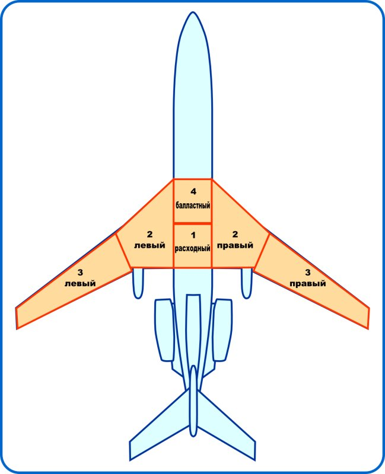
Рис. . Топливные баки самолета Ту-154Б.
В модели, в топливную систему входят:
Топливные баки
Электрические насосы
Клапаны, топливные магистрали, перекрывные краны итд.
Порционер
Автомат расхода
Автомат выравнивания
Топливомеры и расходомер
Топливная система любого лайнера - это довольно сложный комплекс. Ту-154 не исключение, и чтобы правильно управлять моделью, следует иметь некоторое представление о том, как устроена система. В модели реализована т.н. "модифицированная топливная систмема", которая стала применяться в серии с самолета N508.
Топливо хранится в шести баках: четыре бака находятся в крыльях, и два - в центроплане. Основной запас топлива находится в крыльевых баках, бак 1 в центроплане - расходный, и бак 4 - балластный, служит для сдвига центровки вперед. Емкости баков:
Баки 2 - по 9500 кг
Баки 3 - по 5425 кг
Бак 4 - 6600 кг
Бак 1 - 3300 кг
В баках установлены топливные насосы, в баках 3 - по 3, в баках 2 - по 2, в баке 4 - 2 насоса, и в расходном баке 1 - 6 насосов. Насосы баков 2,3,4 перекачивают топливо в бак 1, из которого топливо качается к двигателям четырьмя насосами. Также, из первого бака отдельным насосом питается ВСУ. Кроме того, предусмотрен отдельный насос, питающийся постоянным током, для обеспечения двигателей топливом при отказе всех генераторов и пропадания сети 220 В.
В расходном баке установлен порционер - устройство, перекрывающее поступление топлива из топливных магистралей, если расходный бак полный. Порционер циклически перепускает топливо в расходный бак из баков 2,3,4. Работу устройства можно наблюдать по колебаниям стрелки топливомера бака 1.
Для обеспечения правильной последовательности выработки топлива, в системе предусмотрен автомат расхода. Автомат управляет перекачивающими насосами и таким образом производит выработку топлива по заданной программе, обеспечивающей оптимальные центровочные параметры. В случае отказа или отключения автомата расхода, есть возможность управлять перекачивающими насосами вручную, с помощью переключателей на пульте топливной системы бортинженера.
Выработка топлива может производится неравномерно из правых и левых групп баков, либо может быть произведена несимметричная заправка. Для устранения неравномерности, предусмотрен автомат выравнивания. Автомат следит за равенством топлива по группам баков, и в случае неравномерной выработки, отключает перекачивающие насосы с той стороны, где топливо израсходовано больше. Об отключении насосов сигнализируют желтые лампы на пульте топливной системы.
В системе предусмотрена возможность перекачки топлива из 3-х баков в 2-е, и из 4-го во 2-е. Это сделано для обеспечения оптимальной центровки после посадки самолета, либо если в следующем полете 4-й бак не заполняется.
Контроль за количеством топлива в каждом баке и контроль суммарного количества топлива на борту производится по топливомерам. Кроме топливомеров, в системе редусмотрены расходомеры, измеряющие мгновенный расход топлива по двигателям (521-523). Интегрируя эту информацию, дополнительный расходомер (530) непрерывно вычисляет текущий остаток топлива. Перед полетом, на этом приборе необходимо вручную выставить количество заправленного топлива.
Порядок запуска топливной системы:
Включите топливомеры и расходомер. Выставьте количество топлива на приборе 530, в нижней части прибора есть мышиные зоны. Количество топлива можно посмотреть на приборе 531, стрелка "С"
Включите автомат расхода (5018) и автомат выравнивания (5016). Включите автоматический режим расхода (5019). Лампа "автомат расхода не работает" (5004) должна погаснуть.
Включите 4 насоса подкачки расходного бака (5012). Должны загореться зеленые лампы (5011). Лампа горит - насос работает.
Включите перекрывные краны 5014, должны загореться зеленые лампы 5013. Теперь топливо поступает в двигатели, гаснет табло P топлива (579-С).
Включите насосы подкачки бака 4 (5009) и насосы подкачки баков 2 и 3 (580, 581, 5007, 5008). В автоматическом режиме, эти насосы управляются автоматом расхода, включать их нужно, чтобы обеспечить топливом двигатели в момент отказа автомата расхода.
В зависимости от количества заправленного топлива, расход будет производиться:
Из баков 2, до сработки до остатка по 3700 кг в каждом баке. Горит желтая лампа (5001) и зеленые лампы подкачивающих насосов баков 2 (585, 589, 586, 590).
Из баков 2 и 3, до полной сработки баков 2. Горят лампы (5001, 5002) и зеленые лампы подкачивающих насосов баков 3 (584, 588, 592, 587, 591, 595) и 2 (585, 589, 586, 590).
После полной сработки баков 2 погаснут лампы 5001, 585, 589, 586, 590. В этот момент в баках 3 остается около 1725+-250 кг. Расход производится из баков 3.
В случае неравномерной выработки, соответствующие группы насосов будут выключаться автоматом выравнивания, и загораться желтые лампы (582, 583, 593, 594).
После полной сработки баков 3, погаснут лампы 5002, 584, 588, 592, 587, 591, 595. Расход переключится на бак 4, загорятся лампы 5010 и 5003.
После сработки бака 4 погаснут лампы 5010 и 5003, расход будет производится из бака 1. После сработки бака 1 до остатка 2500 кг, загорится табло "остаток 2500" и включится сирена.
На самолете установлено три двигателя НК-8-2У. Двигатель двухконтурный турбореактивный, взлетная тяга 105 кН. Для запуска двигателей и обеспечения электропитания на самолете установлена ВСУ ТСА-6А.
В процессе моделирования двигателей, основное внимание уделялось достоверности высотной и скоростной характеристик, а также поведению двигателя на режимах близким к предельно допустимым. Если обеспечение характеристик свелось к творческому осмыслению графиков из "Практической аэродинамики" Лигума, то топливную автоматику пришлось моделировать отдельно. Как и в реальном двигателе, в модели применяется ограничитель предельной тяги способом отсечки топлива, на взлетном режиме при отрицательных температурах воздуха. А вот скачок тяги при закрывании клапанов перепуска реализовать пока не получилось.
ВСУ - это дополнительный ГТД, работающий на электрогенератор. Кроме обеспечения электропитания, от ВСУ производится отбор горячего воздуха для запуска двигателей, и работы климатической установки самолета. В модели, ВСУ - это еще один двигатель, другого типа, с тягой, близкой к нулю. Симулятор не делает различий между двигателем и ВСУ, и поэтому в полете тахометр отключенной ВСУ показывает ненулевые обороты, как если бы его турбина находилась в воздушном потоке.
В модели, запустить двигатель можно только от ВСУ. Запуск в воздухе возможен, но пока не реализован. Так же отсутствует система отказов, и двигатели никогда не выходят из строя, даже если виртуальный пилот не соблюдает ограничения по взлетному режиму. Моторные приборы показывают всякую ерунду, и если найдутся желающие точно смоделировать температуру масла и подшипников, вибрацию и прочий "останов Т газов" - добро пожаловать на борт!
Для запуска ВСУ нужно:
Включить питание системы запуска ВСУ (570).Откроются створки ВСУ (577-F).
"Запуск-холодная прокрутка"(571) - в положении "запуск" .
Включить топливный насос ВСУ (572). Если в расходном баке есть топливо, загорится табло "P топлива" (577-G) и "Готов к запуску" (577-H)
Нажать кнопку "Пуск" (574). Загорится зеленая лампа пусковой автоматики ВСУ (577-J), на тахометре (508) будет рост оборотов.
После выхода ВСУ на режим, загорится табло (577-I), а (577-J) погаснет. ВСУ работает, можно включать генератор на бортсеть.
Для выключения ВСУ, нужно нажать кнопку "Стоп" (575), и после останова турбины - выключить АЗС 570, 571, 572.
Для запуска двигателя нужно:
Поставить РУДы в положение "Малый газ".
Подготовить топливную систему.
Запустить ВСУ.
Открыть кран отбора горячего воздуха от ВСУ. Для этого перевести в верхнее положение тумблер 573 и удерживать его до погасания табло "готов к запуску" (577-H).
Включить указатели температуры газов (515-517) выключателями 5030-5032. Проконтролировать исправность термометров нажатием на кнопки 5033-5035.
Открыть крышку панели запуска двигателей 5038.
Включить тумблер "Запуск-Выкл" в положение "Запуск" (577-A).
Включить тумблер "Запуск-Холодная прокрутка" в положение "Запуск" (577-B). Холодная прокрутка смоделирована, но не без глюков. В данной версии использовать режим "холодная прокрутка" не рекомендуется.
При температуре ниже -5С, включить тумблер "Обогрев запального устройства" (577-C). В данной версии двигатель запустится при любом положении обогрева.
Выбрать многопозиционным переключателем (577-D) запускаемый двигатель.
Открыть стоп-кран запускаемого двигателя, переведя рычаг в переднее положение. Рычаги управления стоп-кранами находятся слева от секторов газа, в левой части пульта бортинженера.
Нажать на кнопку "Запуск" (577-Е).Если все подготовительные операции выполнены правильно, загорится зеленая лампа "ПДА работает" (577-G), начнут увеличиваться обороты (контроль по тахометрам 512-514). В процессе выхода двигателя на режим МГ может кратковременно загораться лампа "Опасные обороты стартера" (5036).
При необходимости прервать запуск, нажмите "Прекращение запуска" (577-F).
После выхода двигателя на режим МГ и погасании "ПДА работает"(577-G), выберите переключателем (577-D) следующий двигатель и повторите процедуру запуска.
После запуска всех двигателей, поставьте переключатель (577-D) в нейтральное положение, выключите тумблеры "Запуск-Выкл" (577-A) и "Обогрев запального устройства" (577-C). Тумблер "Запуск-Холодная прокрутка" (577-B) оставьте в положение "Запуск". Закройте крышку панели запуска.
После выхода всех двигателей на режим МГ, подключите генераторы (561-563) на бортсеть.
На самолете Ту-154 имеются три полностью автономные гидросистемы. Гидросистемы обеспечивют работу (с троекратным резервированием) бустеров - рулевых агрегатов РВ, РН и элеронов, а также исполнительных механизмов АБСУ РА-56. Кроме этого, дополнительно
От первой гидросистемы работают:
Выпуск-уборка закрылков, первый канал
Выпуск-уборка шасси, основная система
Торможение колес, основная система и стояночная
Управление интерцепторами, внутренние и внешние секции
Зарядка гидроаккумулятора аварийного торможения
От второй гидросистемы работают:
Выпуск-уборка закрылков, второй канал
Выпуск шасси, аварийная система
Разворот колеса передней стойки шасси
От третьей гидросистемы работают:
Выпуск шасси, аварийная дублирующая система
Каждая гидросистема имеет по два плунжерных насоса, создающих рабочее давление. На среднем двигателе установлены два гидронасоса, на левом и правом двигателях - по одному, и дополнительно две насосные станции с электрическим приводом от сети переменного тока.
Первая гидросистема использует:
Насос левого двигателя
Насос среднего двигателя
Вторая гидросистема:
Насос среднего двигателя
Насосная станция 1
Третья гидросистема:
Насос правого двигателя
Насосная станция 2
В состав каждой гидросистемы входит гидроаккумулятор - cпециальный баллон, заполненный азотом, выполняющий функции накопителя энергии. Кроме трех гидроаккумуляторов в составе систем, есть дополнительный гидроаккумулятор, используемый только для аварийного торможения. Перед полетом, этот гидроаккумулятор заряжается от гидросистемы 1.
Предусмотрена возможность соединять гидросистемы 1 и 2 через электрически управляемый клапан. В нормальной эксплуатации, эта возможность используется для зарядки гидросистемы 1 от насосной станции гидросистемы 2, либо перед запуском двигателя, либо на пробеге после выключения среднего двигателя.
Гидросистемы сами по себе довольно сложны, и взаимодействие их с потребителями иногда напоминает головоломку. Однако управление гидросистемами довольно простое. Органы управления:
Три АЗС под крышкой 339 включают бустера - гидроприводы рулевых поверхностей
Девять АЗС 540 - 548 включают гидропитание агрегатов РА-56, три независимых канала на каждый агрегат
АЗС 5028, 5029 включают насосные станции 1 и 2
АЗС 5027 подключает ГС2 к ГС1.
Кнопка 5026 заряжает гидроаккумулятор аварийного торможения от гидросистемы 1
Манометры 532-535, 125-128, лампы падения давления 5021-5024 и 121-124 служат для контроля давления
Указатели уровня гидрожидкости 536, 537 и кнопки 5025 позволяют оперативно контролировать количество жидкости в системах.
В модели, гидросистмемы, кроме включения бустеров и гидропитания РА-56, управления не требуют. Давление в системах появляется при раскрутке двигателей, и сохраняется, пока двигатели работают. Как и на реальном самолете, при остановке двигателей в воздухе, давление в системах создается вращением компрессоров от воздушного потока. Степень точности моделирования этой ситуации вызывает сомнения.
Модель гидросистемы довольно сложна, и даже не только из-за разветвленной структуры. Расчет давления в ГС, т.е. вычисление количества энергии, запасенной в газовой пружине гидроаккумулятора, требует определенной математической поддержки. Вся математика гидросистем обсчитывается средствами JSBSim. Возможно, на тему моделирования ГС придется написать отдельную статью.
не готово исчо
Во-первых, нам нужно электропитание:
Включаем аккумуляторную батарею (АЗС 569).
Включаем преобразователь 565 и 567.
Включаем огни БАНО (341).
Во-вторых, для запуска нам нужна ВСУ:
Включаем питание ВСУ (570) и запуск (571). Через несколько секунд загорится табло 577-F ("Заборник открыт").
Включаем топливный насос ВСУ 572. Загорится табло 577-G,H.
Включаем пусковую автоматику нажатием кнопки "СТАРТ" (574). Когда ВСУ запустится, загорится табло "Выход на режим" (577-I).
Включаем генератор ВСУ на сеть (переключатель 552 в верхнее положение).
В-третьих, нам нужно давление топлива. Подготавливаем к работе топливную систему:
Включаем топливомеры 5015 и расходомер 5020. Выставляем уровень топлива на приборе 530.
Включаем автомат расхода (5018) и автомат выравнивания (5016).
Переключаем автомат расхода в автоматический режим (АЗС 5019 в верхнее положение).
Включаем насосы баков 2,3,4 (АЗС 580, 581, 5007, 5008, 5009).
Включаем подкачивающие насосы расходного бака 1 (4 АЗС 5012).
Включаем перекрывные краны 5014. Появляется давление в топливных системах двигателей, гаснут табло "P топлива" (579-С)
В-четвертых, нам нужен горячий воздух. Нажимаем переключатель 573 в верхнее положение, и удерживаем до погасания табло 577-H.
Включаем контроль температуры газов за турбиной (АЗС 5030-5032).
Двигатели готовы к запуску. Переводим стоп-краны в переднее положение, слева на пульте бортинженера, три рычага с красными лампами отказа двигателя.
Открываем крышку пульта запуска двигателей 5038.
Включаем пусковую автоматику (5038-A) и переключатель "запуск-холодная прокрутка" в положение "запуск" (5038-B).
На реальном самолете, при температуре ниже -5'С следует включать обогрев запального устройства (5038-C). Однако, в данной версии модели, двигатель запустится независимо от температуры и обогрева.
Запускаем двигатель:
Включаем проблесковые огни ОМИ (342).
Выбираем четырехпозиционным переключателем (5038-D) запускаемый двигатель.
Нажимаем кнопку запуска 5038-Е. Если необходимые подготовительные процедуры выполнены правильно, загорится зеленая лампа "ПДА работает" (5038-G) и двигатель будет набирать обороты. После выхода двигателя на режим МГ, погаснет лампа 5038-G.
Выбираем переключателем (5038-D) следующий двигатель и повторяем процедуру.
При необходимости, прекратить процесс запуска можно нажатием кнопки 5038-F.
После запуска двигателей:
Устанавливаем 5038-D в среднее положение и закрываем крышку пульта.
Подключаем генераторы на бортсеть (561-563) и ставим переключатель 552 в среднее положение.
Нажатием кнопки 5026 заряжаем гидроаккумулятор аварийного торможения (контрольный манометр 535)до погасания лампы 5024.
Подключаем гидропитание агрегатов РА-56 (540-548).
Включаем систему улучшения продольной управляемости (549).
Выключаем ВСУ. Для этого:
Закрываем кран отбора воздуха нажав выключатель 573 вниз, до загорания табло "готов к запуску" (577-H).
Останавливаем турбину ВСУ нажатием кнопки "СТОП" (575).
Отключаем топливный насос ВСУ (572) и пусковую автоматику (570).
Переключаемся в вид 4.
Включаем верхний ряд АЗС на оверхеде, 401-420.
Включаем оба комплекта Курс-МП, 421, 422.
Если нужен РСБН - включаем 423, и 424 если используем РСБН в режиме VOR.
Включаем оставшийся нижний ряд АЗС , 425-432.
Включаем ДИСС, 433-435.
Включаем табло в салоне 437. Пассажиров следует держать в строгости!
Подготавливаем радиосредства:
Устанавливаем частоты и радиалы Курс-МП (пульты 445, 446).
Устанавливаем частоты приводов АРК (пульты 442, 443).
Устанавливаем частоты COM-радио (пульты 440, 441).
Подготавливаем к работе ТКС:
Нажимаем и удерживаем "~" (тильду), чтобы иметь удобный обзор пульта ПУ-11 (436).
Выставляем широту ручкой 436-D, по шкале 436-A. Или включаем автоматическую коррекцию широты (436-В в левое положение), если нас не волнует достоверность:)
Выбираем режим МК (переключатель 436-С в левое положение).
Начинаем выставлять контрольный гироагрегат. Ставим 436-G в нижнее положение.
Нажимаем и удерживаем кнопку 436-H. Внизу появляется строка подсказки.
Удерживаем кнопку согласования, пока положение гироагрегата 2 (ГА-3-2) не перестанет изменяться. Когда отработка быстрого согласования закончится, контрольный гироагрегат будет выставлен по магнитному курсу самолета.
Выставляем основной гироагрегат. Ставим 436-G в верхнее положение.
Снова нажимаем и удерживаем кнопку 436-H, до прекращения вращения основного гироагрегата. Контроль ведем по цифровой подсказке ГА-3-1.
Гироагрегаты по магнитному курсу не выставляются идеально, и между ними будет разбег около градуса. Этот разбег будет выбран позже.
Выключаем режим магнитной коррекции МК (переключатель 436-С в среднее положение "ГПК").
Выставляем блоки гиромагнитного курса БГМК. Для этого, нажимаем и удерживаем кнопку быстрого согласования 436-H до прекращения изменения магнитного курса БГМК-2-1. После проведения коррекции, этот курс должен совпадать с курсом основного гироагрегата ГА-3-1
Ставим 436-G в нижнее положение, и проводим коррекцию магнитного курса контрольного БГМК-2-2. Нажимаем и удерживаем 436-H прекращения изменения магнитного курса БГМК-2-2.
После выполнения коррекции, все курсы в строке подсказки должны совпадать с магнитным курсом самолета, с отклонением не более градуса.
Перед взлетом, когда самолет точно выставлен вдоль ВПП, задатчиком курса 436-F нужно вручную подстроить положение гироагрегатов ГА-3-1 и ГА-3-2, с максимально возможной точностью, ориентируясь на магнитный курс ВПП. Выбор агрегата производится тумблером 436-G. Таким же образом оси гироагрегатов переводятся на меридиан аэродрома посадки.
Продолжаем подготовку систем ПНК. Выставляем гировертикали:
Выбираем вид 1 (КВСа) и подстраиваем обзор таким образом, чтобы видеть одновременно ПКП (101) и часть пульта ПУ-46 с колпаком 357.
Открываем колпак 357, нажимаем и удерживаем кнопки под ним. Наблюдаем поворот авиагоризонтов в рабочее положение.
После выставления авиагоризонтов, закрываем крышку 357.
Переключаем тумблер 405 (на оверхеде) вверх и вниз, закрываем крышку. Этот тумблер сбрасывает сигнал ошибки БКК.
Убеждаемся, что погасли сигналы:отказ контр. АГ, отказа МГВ контрольной, убрались бланкеры АГ с ПКП.
После выставки гировертикалей, и сброса отказа АГ/МГВк, следует выключить и снова включить питание САУ-СТУ (407). Должен быть слышен звуковой сигнал, и на ПУ-46 погаснут табло “ОТКЛ” и появятся символы штурвального управления. АБСУ включена и готова к работе. Если на табло продолжает гореть “ОТКЛ”, необходимо проверить готовность гидросистем, включение бустеров, гидропитания агрегатов РА-56, системы продольной управляемости, исправность и согласование гировертикалей. После выполнения пропущенной операции, необходимо выключить и включить тумблер 407. Взлет с неисправной АБСУ категорически запрещен!
Устанавливаем давление в СВС, кремальерой прибора 105 устанавливаем стрелку в ноль, и вводим давление в футомер УВИД-15 (117).
ПНК подготовлен, за исключением НВУ.
Запускаем двигатели, подготавливаем ПНК.
Включаем бустера, закрываем крышку 339.
Включаем разворот колеса (447), ставим переключатель разворота (448) в положение 63 (нижнее).
Вызываем подсказку, щелкнув по прибору 309, и определяем требуемое положение задатчика стабилизатора, в зависимости от центровки. При значениях центровки менее 28% выбирается положение "П", от 28% до 35% - положение "С", более 35% - положение "З".
Рулим на предварительный. В процессе руления выпускаем закрылки в положение 28, кнопками на джойстике либо управляя рычагом 451. Стабилизатор автоматически займет согласованное положение, штурман доложит.
Выруливаем на исполнительный. Ставим самолет точно вдоль полосы, и подстраиваем положение гироагрегатов на пульте ПУ-11, переключатели 436-F,G.
Подстраиваем кремальерой ЗПУ на ПНП (102-D) требуемый курс посадки, если планируем полет по кругу и заход на посадку с этим же курсом. Белая стрелка (102-F) должна указывать на нуль по шкале сноса, цифры в окне ПНП (102-C) совпадать с магнитным курсом ВПП.
Включаем вычислитель посадки (352) и стрелки ПКП (354).
Подстраиваем кремальерой ЗПУ (102-B) курс самолета после первого разворота, обычно под 90 градусов к взлетному курсу, ориентируясь на положение подвижного желтого индекса 102-L.
Ставим переключатель разворота (448) в положение 10 (верхнее).
Если мы выполнили правильно все операции, погаснет мигающее табло "к взлету не готов" (155), и экипаж доложит о готовности к взлету.
Переводим РУДы в положение взлетного режима (или номинального, если взлет происходит на номинале). Отпускаем тормоза (shift+B). Поехали.
В процессе разбега, контролируем скорость и слушаем штурмана. Когда скорость достигнет Vr, подымаем переднее колесо и производим взлет. В момент взлета, не допускаем излишнего увеличения угла атаки и срабатывания сигнализации АУАСП.
После набора высоты 5-10 м, убираем шасси.
Продолжаем набор высоты и разгон, с таким расчетом, чтобы к высоте 120 м скорость составляла 320-330 км/ч. На высоте 120 м начинаем уборку закрылков. В процессе уборки, изменением угла тангажа, разгоняем скорость с таким расчетом, чтобы к моменту завершения уборки иметь скорость около 400 км/ч (V0, безопасная скорость полета на чистом крыле).
На высоте не менее 450 м убираем взлетный режим двигателей.
Включаем автопилот - тумблеры 365, 367 и кнопку-лампу 363. Дальше машиной управляет АБСУ.
По достижении высоты круга, нажимаем кнопку-лампу "H" (361). Продольный канал начинает стабилизировать высоту.
Выполняем "коробочку". Нажимаем кнопку-лампу "ЗК" (348). Самолет начинает выполнять разворот на курс, установленный левой кремальерой командирского ПКП, желтый индекс. Предполагается, что нужный курс ЗК был выставлен при подготовке.
Управляя кремальерой "ЗК", выполняем второй разворот, контролируя положение самолета по радионавигационным средствам.
В процессе полета к третьему развороту, снижаем скорость с таким расчетом, чтобы к траверзу ДПРМ иметь скорость 400 км/ч.
Настраиваем первый Курс-МП на частоту ILS, включаем вычислитель посадки (352) и стрелки ПНП (354).
Если планируется посадка с использованием автомата тяги, включаем тумблеры 373, 374.
На траверзе ДПРМ, снизив скорость ниже 400 км/ч, выпускаем шасси.
После выпуска шасси, выпускаем закрылки в положение 15.
Третий разворот выполняем с креном 15-20 градусов на скорости 360-370 км/ч.
В процессе полета от 3 к 4 развороту, выпускаем закрылки в положение 28 с одновременным торможением до скорости не более 360 км/ч в конце выпуска. Уменьшаем скорость до 280-300 км/ч.
Включаем автомат тяги (кнопка 372) и выставляем требуемую скорость колесом 375.
Четвертый разворот выполняем задатчиком крена либо кремальерой ЗК, либо включением автоматическогго режима ЗАХОД (353).
После выхода из 4 разворота, на скорости не более 300км/ч довыпускаем закрылки в положение 45. Уменьшаем скорость до значения Vref и на этой скорости выполняем полет до входа в глиссаду.
В момент пересечения глиссады, если выполняется автоматический заход и самолет в посадочной конфигурации, включится автоматический режим снижения ГЛИСС. Если режим не включился, его можно принудительно включить нажатием кнопки-лампы 355.
Если выполняется ручной\директорный заход, самолет балансируется с помощью МЭТ. При полете по глиссаде, отклонения вертикальной скорости от расчетной исправляют рулем высоты, отклонение приборной скорости - только режимом двигателей. При уменьшении режима, скорость самолета в посадочной конфигурации быстро падает, поэтому РУДы следует двигать осторожно, с шагом не больше 5%.
Автоматический режим захода необходимо отключить на ВПР (60 м в стандартных условиях). Дальнейшее снижение и посадка производится в ручном режиме.
Пролет торца ВПП производится на высоте около 15 м.
Пролет торца и полет до высоты 5 м производим по продолженной глиссаде. На высоте 5 м ставим РУДы в положение МГ и начинаем выравнивание. К концу выравнивания производим приземление, при этом скорость будет на 5-10 км/ч меньше скорости пересечения торца. После приземления, включаем реверс (выпустятся интерцепторы), плавно опускаем переднюю ногу шасси и приступаем к торможению. На скорости 140 км/ч в обычных условиях реверс выключаем. Применяем торможение.
Ставим переключатель разворота (448) в положение 63 (нижнее) и рулим на стоянку. В процессе руления, убираем механизацию.
Максимальная взлетная масса – 98 т.
Максимальная посадочная масса – 78 т.
Максимальная скорость
до H=7 км – 600 км/ч
от H=7 до 10.3 км – 575 км/ч
Максимальное число М на H>10.3 – 0.88
Ограничения по закрылкам
15 – 420 км/ч
28 – 360 км/ч
45 – 300 км/ч
Максимальная скорость при выпуске\уборке шасси – 400 км/ч
Взлет:
Vr – см. строку подсказки
Набор высоты:
Режим двигателя – номинальный, 92% по ИТЭ.
Скорость в наборе – 550-575 км/ч до H < 9.5 – 9.7 км
Число М в наборе – 0.8 – 0.85 H > 9.5 – 9.7 км
Посадка:
Vref - см. строку подсказки.
Чтобы эффективно использовать навигационное вычислительное устройство, пользователь должен изучить соответствующие разделы документации ПТ: русский вариант – Docs/PT_Docs/pnk_3.20.pdf (раздел 4, стр. 19-23), английский вариант – Docs/PT_Docs/pttu154_94eng.pdf (раздел 7.3, стр. 84-91). В версии для FlightGear, НВУ работает точно так, как в оригинальной модели Project Tupolev. Возможно использовать и навигационные калькуляторы от ПТ.
Правильная работа навигационного комплекса стала возможна только начиная с SVN-версии модели № 99 (май 2010), или релиза 1.1. На момент написания документации, релиз 1.1 еще не был выпущен.
Для выполнения коррекции по РСБН необходимо дополнить базу навигационных средств симулятора информацией о маяках РСБН. Как это сделать – указано выше, в разделе “РСБН”.
Теоретические принципы работы НВУ в данном разделе обсуждаться не будут, про систему много написано в форумах. Здесь – только пример полета, с применением собственной реализации калькулятора и виртуального штурмана.
По просьбе наших польских коллег, будет разобран маршрут Варшава – Берлин (EPWA-EDDT). Итак.
Нам понадобится маршрут. Я воспользовался вот этим планировщиком: http://fgfs.i-net.hu/modules/fgplanner/ и получил следующий результат:
EPWA
MRA/Mragowo VOR-DME
F/Pruszcz Gdanski NDB
DAR/Darlowo VOR-DME
HC/Heringsdorf NDB
EDDT
Там же в таблице приведены частоты средств и географические координаты точек. Обратите внимание, что на карте этого планировщика, координаты даны в формате “градусы.доли градуса”, т.е. во внутреннем формате FlightGear – в отличии от Джеппесена и наших схем, где после десятичной точки идут минуты.
Кроме плана полета, нам потребуется магнитное склонение Берлина. В планировщике такой информации не оказалось, схем Берлина под рукой – тоже, поэтому пришлось проявить смекалку и выудить искомую величину (+2) из файла nav.dat. Подсказка для любознательных: маяки VOR ставятся по магнитному меридиану...
Начинаем подготовку к полету. Запускаем сим в EPWA, заходим в меню tu-154B-2 и открываем Route Manager. Это штатный менеджер симулятора, мы его используем как интерфейс к навигационной базе. Вводим наш маршрут, по точкам, начиная с точки вылета. Если мы ввели навигационную точку правильно, она появится в списке. Вводить надо то название, которое планировщик показал перед слэшем (т.е. для MRA/Mragowo VOR-DME вводить надо MRA).
Кстати, тут же можно вводить пересечения. Маршрут вовсе не обязательно должен проходить через радионавигационную точку. НВУ позволяет использовать произвольные маршруты.
После ввода всех пунктов маршрута, окно роут-менеджера можно закрыть, и открыть в том же меню окно навигационного калькулятора (NVU Calculator).
При первом запуске, окно будет пустым. Нажмите Calculate, чтобы в окне показались рассчитанные данные нашего полета. На этом этапе нужно убедиться, что мы не ошиблись при вводе точек и общая длина нашего пути соответствует ожидаемой.
В главном окне навигационного калькулятора будут перечислены частные ортодромии нашего маршрута. Для каждой ортодромии указан начальный и конечный пункт, длина маршрута в км, заданный путевой угол (ЗПУ) аэропорта вылета и посадки. Длина маршрута задана отрицательная, как это принято в системе координат НВУ.
Вводим магнитные склонения. Для конечного пункта назначения вводим величину 2.0 в окно “Destination mag var”, а для начального пункта просто ставим галочку “Use current”. Еще раз наживаем Calculate и убеждаемся, что углы в главном окне пересчитались, и изменилось величина вилки.
Готовим данные для коррекции. Выбираем, где мы будем корректироваться. Смотрим в схему, в карту планировщика итд. Для данного маршрута, я выбрал коррекцию последнего участка (№ 5) по маяку Tempelhof с координатами 52.4731 СШ и 13.405389 ВД. Вводим эти данные в нижнюю строку калькулятора, в окно “Beacon for route” - номер ортодромии из списка, широту - lat, долготу – lon, и НЕ СТАВИМ галочку “deg.min” - потому что географические координаты маяка взяты в формате “градусы.доли градуса”. А если бы мы взяли координаты маяка из схем, то вводить нужно было бы так: градусы, потом десятичная точка, потом минуты и потом без точек и других разделителей – доли минуты. В этом случае надо поставить галочку “deg.min”.
Нажимаем “Add” и еще раз “Calculate”. Видим, что в окне появились координаты маяка, в системе координат финального участка нашего маршрута. Если все сделано правильно и ничего не перепутано (например, неправильный знак долготы отправит маяк в другое полушарие) мы получим Sm и Zm, которые дадут нам вектор от конечного пункта маршрута до маяка (в нашем случае – от EDDT до Tempelhof).
Все, данные подготовлены. Можно запускать двигатели и подготавливать к работе системы.
После запуска и подготовки, включаем НВУ (383-Q). Должна загореться зеленая лампа. Если лампа не загорелась – проверьте включение аппаратуры ДИСС и системы СВС.
Снова открываем навигационный калькулятор. Ставим галочку “Virtual navigator” и нажимаем “Calculate”. Этим мы активизируем виртуального штурмана. Он будет загружать нам очередную порцию данных в НВУ, когда мы достигнем промежуточного пункта маршрута (ППМ). Если есть желание, можно штурмана не включать и делать всю работу руками. Данные для загрузки в НВУ находятся в окне калькулятора. S загружается в “Самолет” или “Пункт”, ZPUdep (а после перевода гироагрегатов - ZPUdest)– в соответствующий пульт ЗПУ, параметры коррекции – в “Маяк” и “Угол карты”.
Небольшое отступление. Мы можем загружать данные в НВУ полностью в ручном режиме, используя соответствующие пульты. В реальной жизни, этим занимается штурман. В модели, существует возможность полуавтоматической загрузки навигационных данных. Для этого, просто щелкаем мышкой на выбранном маршруте в окне калькулятора. Если в данный момент производится счисление (мы уже летим под управлением активного полукомплекта НВУ), то данные выбранного маршрута будут загружены в неактивный полукомплект (счетчики “Пункт”), и выбранный маршрут станет активным после завершения текущего. Если же счисление не ведется, то данные будут загружены в активный полукомплект (счетчики “Самолет”). Кроме того, сразу же будет загружен неактивный полукомплект (“Пункт”) данными следующего маршрута, в том порядке, как маршруты перечислены в окне калькулятора.
Таким образом, мы можем загружать НВУ с любого выбранного маршрута, как на земле, так и в полете, при необходимости пропускать маршруты, итд.
Когда мы используем виртуального штурмана, необходимо перед вылетом выполнить вышеописанную процедуру загрузки НВУ, чтобы штурман знал, с какого маршрута вести автоматическую загрузку. Убедившись, что “Счисление” (383-R) выключено, щелкаем на первом маршруте и наблюдаем, как в счетчики “Самолет”, “Пункт”, “ЗПУ” загрузились данные двух маршрутов – выбранного и следующего.
Возвращаемся к нашему полету. Выруливаем, взлетаем. На разбеге включаем “Счисление”. НВУ начинает считать километры, после достижения скорости 180 км/ч. После взлета и выполнения схемы выхода, у нас на текущих счетчиках “самолет” будет ненулевая Z. В процессе набора, можно либо вручную вывести машину на ЛЗП, либо поручить это автоматике, включив управление автопилотом от НВУ. Для этого:
Включаем “Крен” и “Стаб”, если до сих пор это почему-то не сделали;
Включаем тумблер “Подготовка навигации” и нажимаем кнопку-лампу “НВУ” на ПН-5. На панели индикаторов загорится зеленое табло “НВУ”, на ПНП белая стрелка отработает введенный ЗПУ активного участка, планка положения отклонится в сторону и будет показывать Z, машина начнет разворот и выполнит выход на ЛЗП.
После выхода, машина будет следовать по маршруту. Если вы включили виртуального штурмана, данные очередного участка будут загружаться в НВУ автоматически. За 2 км до введенного ЛУР штурман (голосом) будет сообщать “Подходим к ППМ!”. Чтобы происходила смена полукомплектов НВУ, мы должны выбрать ЛУР, установив селектором (383-N) необходимое упреждение. Упреждение будет зависеть от скорости полета, а так же от того, насколько крутой предстоит поворот, т.е. насколько сильно отличаются ЗПУ смежных участков. Промах в определении ЛУР приведет к дополнительному развороту при смене ЧО.
Если селектор 383-N оставить в положении “Выкл”, то смена ортодромий выполнена не будет, и так же не будет работать виртуальный штурман. А если поставить селектор в крайнее левое положение, то смена ортодромий будет выполнена принудительно.
В процессе выполнения полета, полагается настраивать радиосредства и контролировать движение машины по нескольким источникам навигационной информации. Навигация должна быть комплексной!
Мы запланировали коррекцию на финальном участке нашего полета. После того, как мы выйдем на последнюю частную ортодромию маршрута, в активном полукомплекте НВУ должны быть загружены параметры коррекции – в счетчиках “Маяк” должны находиться рассчитанные координаты маяка. Если их там нет (например, из-за сбоя автоматики виртуального штурмана) - необходимо внести их вручную, установив селкктор 383-M в положение Sm, Zm и введя кнопками 383 T-V нужные координаты. Кнопка U переключает шаг ввода в десять раз. Угол карты вводится в пульт 340.
В реальной жизни, НВУ возможно корректировать только по сигналам маяков системы РСБН. Эта система устанавливалась только на территории ex-USSR. Более того, в настоящее время, гражданские станции РСБН выводятся из эксплуатации и заменяются станциями VOR-DME. Система РСБН, как я понимаю, в дальнейшем будет использоваться только для военного применения.
Оригинальная система РСБН использует для настройки не частоты, а фиксированные каналы. Две ручки на пульте 438 позволяют выбрать 40 каналов. В модели, существует возможность использовать маяки VOR для коррекции. Чтобы перевести РСБН для работы с маяками VOR, необходимо включить тумблер 424. В этом режиме, левая ручка пульта 438 устанавливает мегагерцы, правая ручка – килогерцы. Выбранная частота показана в строке подсказки. Данный режим является полностью виртуальным, в реальной жизни приемник РСБН не может работать с сигналами VOR. Тем не менее, в модели такая возможность есть. Ну, представим себе, что в процессе вывода советских войск, двадцать лет назад, один из маяков РСБН забыли, и он продолжает работать, маскируясь под VOR-DME Tempelhof :)
Нам необходимо настроиться на выбранный маяк. Частота маяка Tempelhof – 114.1 Mhz. Включаем тумблер 423, и ручками на пульте 438 выставляем частоту 114.100, ориентируясь на строку подсказки. Если мы настроились правильно, и мы находимся в зоне действия маяка, оживет индикатор ППДА-Ш (321). Индикатор покажет нам наш радиал (относительно истинного меридиана, маяки РСБН ориентированы именно так) и дальность. Чтобы продублировать дальность на командирский индикатор DME (107), необходимо поставить селектор 120 в среднее положение.
Если все данные для коррекции (Sm, Zm, УК) введены в НВУ, машина находится на правильной ортодромии, и настроен РСБН – мы готовы к коррекции.
Включаем тумблер “Коррекция” (383-S). Если есть сигнал РСБН – загорится зеленая лампа 383-P. Счетчики активной ортодромии “Самолет”, которые медленно вращались, начнут вращаться с повышенной скоростью, и через несколько секунд скорость вращения опять вернется к своему обычному значению. При этом возможно появление ненулевой величины Z, и как следствие – машина начнет выполнять разворот, компенсируя ошибку коррекции.
Выключите тумблер “Коррекция”. Все, коррекция произведена. Сигнал от маяка поступил в НВУ, и накопленная ошибка счисления была устранена. Самолет выполнил маневр, и вышел на новую, правильную траекторию.
Если же в процессе подготовки данных для коррекции была допущена ошибка, то в большинстве случаев, процесс счисления будет разрушен полностью, и дальнейший полет под управлением НВУ станет невозможен. Необходимо перейти на другие навигационные средства. И да, ошибки штурмана иногда дорого обходятся экипажу и пассажирам...
Коррекцию рекомендовано производить после перевода ТКС на курс аэродрома посадки. Это важный и сложный этап полета. И ошибки на этапе перевода ТКС тоже способны создать проблемы экипажу. Про процедуру перевода ТКС вы можете прочитать в документации ПТ, а в нашем случае, есть возможность процедуру упростить. Перед снижением с эшелона, откройте калькулятор НВУ и нажмите кнопку “Apply fork”. Если стрелка на ПНП не довернулась до правильного положения (это случается на слабых машинах), измените активный ЗПУ (пульт 382, кнопки I-K). измените угол на щелчок вверх, а потом – вниз, на место. Все, ТКС переведена на курс аэродрома посадки, и после снижения, гироскопический курс ТКС будет соответствовать магнитному курсу на аэродроме.
Когда машина движется на финальном участке маршрута, следует установить селектор ЛУР в положение “откл”, чтобы избежать смены ортодромии в КПМ. После того, как счетчики “Самолет” досчитают до нуля, ваш маршрут закончен. НВУ вывела вас на конечный пункт маршрута – примерно на середину ВПП EDDT. Не верите? Переключитесь во внешний вид, и если вы все сделали правильно,вы убедитесь в этом сами:)